LAB 5 · เทรน LLM บนคลัสเตอร์หลายเครื่อง
เส้นทางของทั้งบท: จาก 1 เครื่อง (1 Node) สู่คลัสเตอร์ 2–3 เครื่อง (หลาย Node) ผ่านอินเทอร์เน็ตภาพจำลอง
1 Node = เครื่องคอมพิวเตอร์ 1 เครื่อง (เครื่องละ 2 GPU) · นำหลายเครื่องมาต่อกันเรียกว่า คลัสเตอร์ — เทียบ 1, 2 และ 3 Node ทั้งแบบ Data Parallelism และ Model Parallelism
แผนที่โฟลเดอร์ของ LAB 5: เทียบ 1 Node กับ 2 แล็บย่อยบนคลัสเตอร์
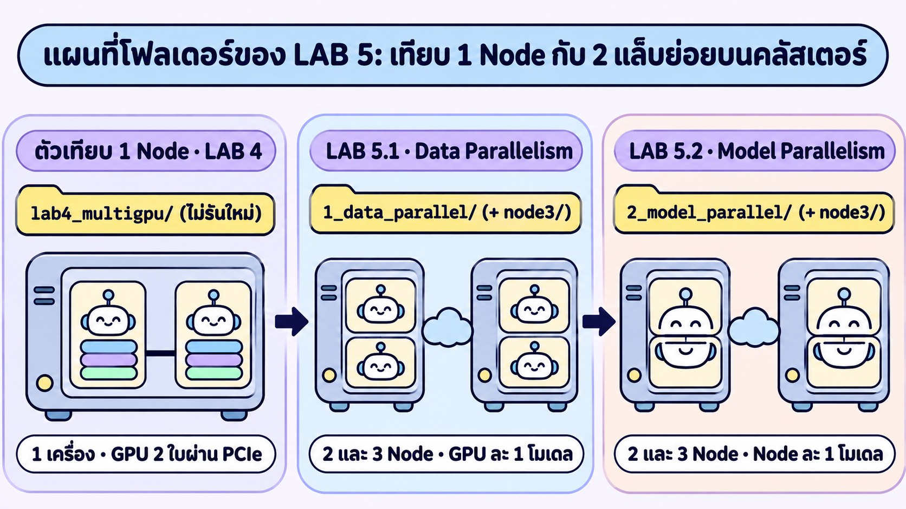
lab4_multigpu/) ไม่ต้องรันใหม่ ใช้ผล GPU 2 ใบในเครื่องเดียวของ LAB 4.2 และ LAB 4.3 เป็นจุดเทียบความเร็ว1_data_parallel/ และ node3/) เทรนแบบ Data Parallelism ข้าม 2 Node (GPU 4 ใบ) แล้วขยายเป็น 3 Node (GPU 6 ใบ) รวม 6 ขั้น2_model_parallel/ และ node3/) แบ่ง Layer ของโมเดลลง 2 GPU ในแต่ละเครื่อง แล้วเฉลี่ย Gradient ข้าม 2 Node และ 3 Node รวม 6 ขั้น1 Node คืออะไร และคลัสเตอร์หลายเครื่องต่างจาก LAB 4 อย่างไร
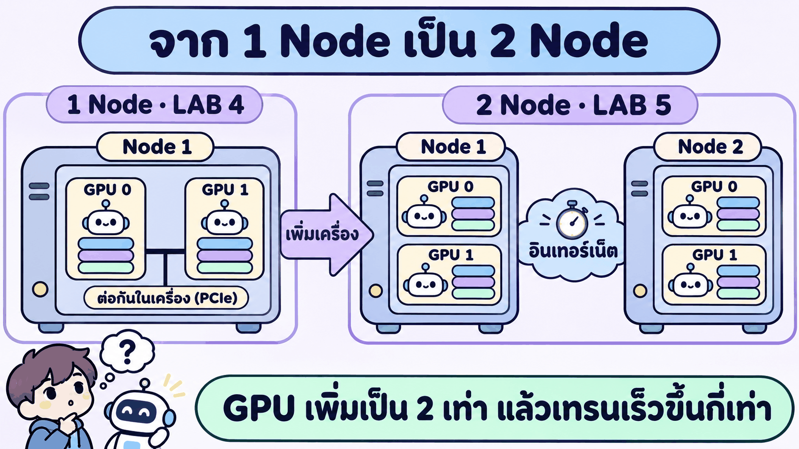
คลัสเตอร์ 2 เครื่อง (2 Node · 4 GPU) ใช้ได้ 2 แบบ ต่างกันที่การจัดวางโมเดลในแต่ละเครื่อง
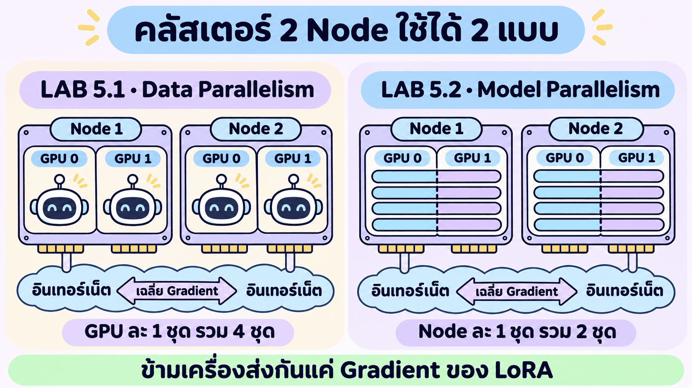
สรุปโครงสร้าง LAB 5.1 และ LAB 5.2: ในเครื่องทำอะไร ข้ามเครื่องทำอะไร และเทียบกับใครตารางหลัก · 2 LAB ย่อย
| LAB ย่อย | ในเครื่อง (GPU 2 ใบ) | ข้ามเครื่อง | ตัวเทียบ 1 Node | ขั้น |
|---|---|---|---|---|
| LAB 5.1 · Data Parallelism | GPU ละ 1 โมเดลครบชุด · batch 4 ต่อ GPU | เฉลี่ย Gradient ของทุก GPU | LAB 4.2 | 6 (2 Node แล้ว 3 Node) |
| LAB 5.2 · Model Parallelism | โมเดล 1 ชุดแบ่ง Layer ลง 2 ใบ · batch 8 ต่อ Node | เฉลี่ย Gradient ของทุก Node | LAB 4.3 | 6 (2 Node แล้ว 3 Node) |
node3/ตัวแปรควบคุมที่ตรึงเหมือนกันทั้ง 2 LAB ย่อย เพื่อให้เทียบกับ 1 Node ได้ตรงไปตรงมาค่าที่ตรึง
| หัวข้อ | ค่า |
|---|---|
| โมเดล | Qwen/Qwen3-8B แบบ bf16 · LoRA r 8 alpha 16 ที่ q_proj กับ v_proj (เทรน 3,833,856 parameter) |
| Dataset | b-mc2/sql-create-context · Training Set 4,000 · Test Set 200 · สับด้วย seed 0 · ทุก Node ได้ชุดเดียวกัน |
| ค่าที่ตรึง | learning rate 2e-4 · seed 0 · ข้อความยาวไม่เกิน 256 token · ปิด thinking · ไม่ใช้ Gradient Checkpointing · 2 Epoch · batch เท่ากับ LAB 4 |
| เครื่อง | RTX 3090 24 GB × 2 ต่อ Node · IP สาธารณะต่างกัน · Node 1 เปิด 1 port |
| สิ่งที่วัด | เน็ตระหว่าง Node · เวลาต่อ step แยกเป็นคำนวณ กับ ส่งและรอ · ตัวอย่างต่อวินาที · GPU util · น้ำหนัก LoRA ของทุก Worker เท่ากันหรือไม่ · Exact Match ของ Base และหลังจบแต่ละ Epoch |
โจทย์เดิมจาก LAB 4 และกลไกหลักของคลัสเตอร์
ก่อนเริ่มเช่าคลัสเตอร์ ต้องเข้าใจ 4 เรื่องร่วม: ข้อมูลและ LoRA 15.3 MB · Coordinator 1 port · ต้นทุนสื่อสารข้ามอินเทอร์เน็ต · และวิธีวัด Speedup
งานเดิมจาก LAB 4: เทรน Qwen3-8B บน sql-create-context (4,000 / 200)

b-mc2/sql-create-context (78,577 ตัวอย่าง) สับด้วย seed 0 แบ่งเป็น Training Set 4,000 และ Test Set 200Qwen/Qwen3-8B (bf16, 36 Layer, 8.19B params) ปิดโหมด thinking เทรน 2 Epoch วัด Exact Match บน Test Set 200 ข้อทำไมคลัสเตอร์นี้ส่งข้ามเครื่องแค่ ~15 MB ต่อ step แทนที่จะเป็น 16 GB

r=8, alpha=16) ที่ q_proj กับ v_proj ครบ 36 Layer = 72 จุดfloat32 = 3,833,856 × 4 byte = 15.3 MB (วัดได้ 15,335,424 byte) — ถ้าส่งแบบ bf16 เหลือครึ่งเดียวคือ 7.67 MBCoordinator: โปรแกรมกลางบน Node 1 เปิด port เดียวให้ทุก Worker ต่อเข้ามา
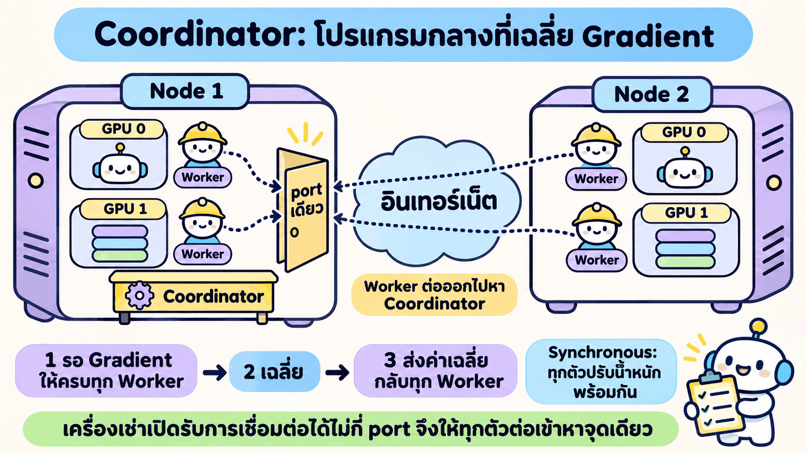
ต้นทุนการสื่อสาร: ในเครื่องวิ่งผ่าน PCIe แต่ข้ามเครื่องต้องผ่านอินเทอร์เน็ตทุก step
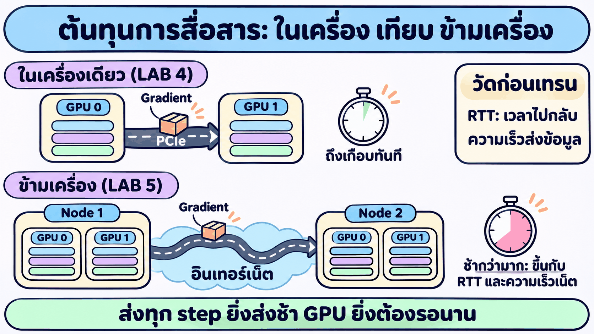
วัดความคุ้มของการเพิ่มเครื่องด้วย Speedup และ Efficiency
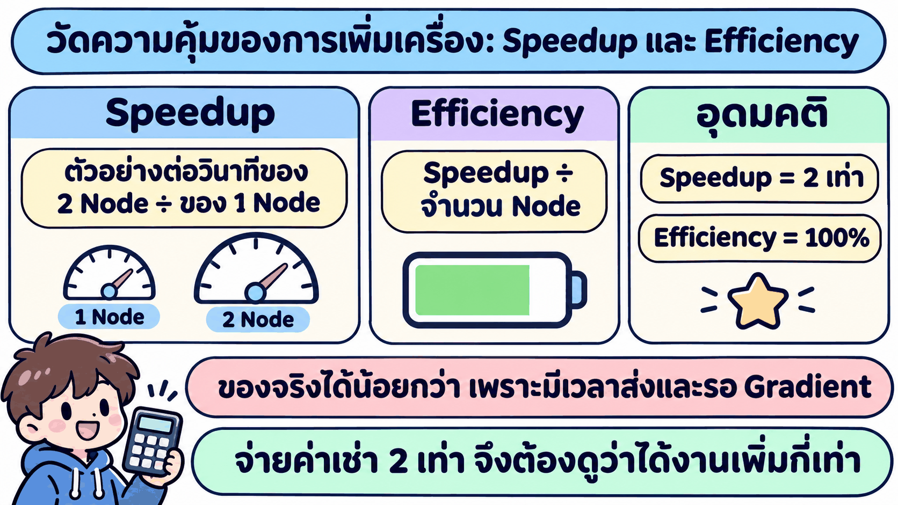
ประมาณเวลาส่งก่อนเทรน: ขนาด Gradient หารความเร็วเน็ต
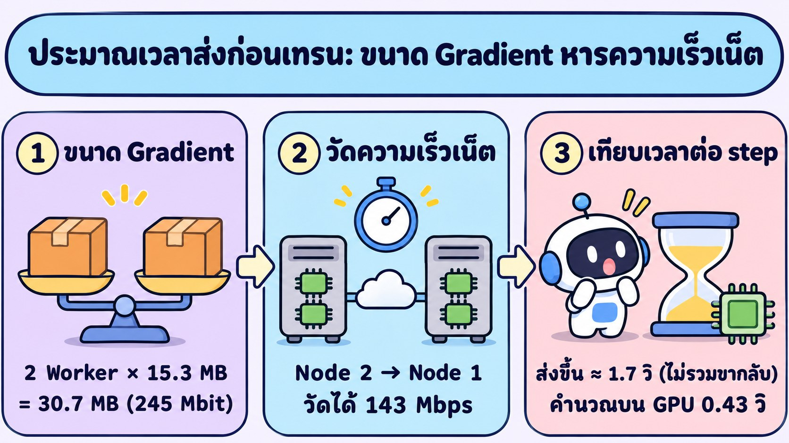
2 × 15.3 MB = 30.7 MB = 245 MbitNode 2 → Node 1 วัดได้จริงเพียง 143 Mbps (ไม่ใช่ 700 Mbps ที่หน้าเช่าประกาศ)245 ÷ 143 ≈ 1.7 วินาที นานกว่าเวลาคำนวณ (0.43 วินาที) ราว 4 เท่าแล้ว จึงรู้ก่อนเทรนว่าเน็ตจะเป็นคอขวดData Parallelism บนคลัสเตอร์ · 2 Node และ 3 Node
คำถาม: ให้ GPU ทุกใบข้ามเครื่องถือโมเดลครบชุด (4 และ 6 โมเดล) แบ่งข้อมูลกันเทรน จะเร็วขึ้นกี่เท่าเทียบกับ 1 Node ของ LAB 4.2
โฟลเดอร์: 1_data_parallel/ (ขั้น 1–3 · 2 Node = 4 GPU) และ 1_data_parallel/node3/ (ขั้น 4–6 · 3 Node = 6 GPU)
Data Parallelism ข้าม 2 Node: โมเดล 4 ชุด แบ่งข้อมูลใบละ 1/4 แล้วเฉลี่ยที่ Node 1
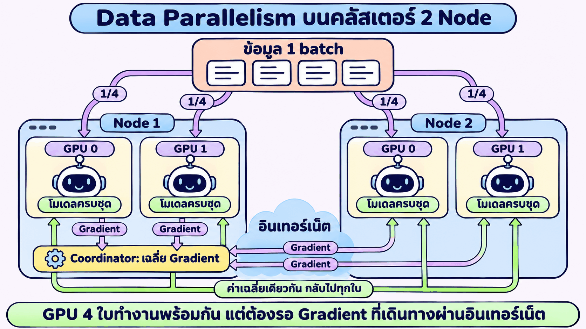
batch = 4 ต่อ GPU เท่า LAB 4.2 ทำให้ batch รวม = 16 (250 step/Epoch)1 step ของ DP ข้าม 2 Node: เวลาต่อ step = เวลาคำนวณ + เวลาส่งและรอ
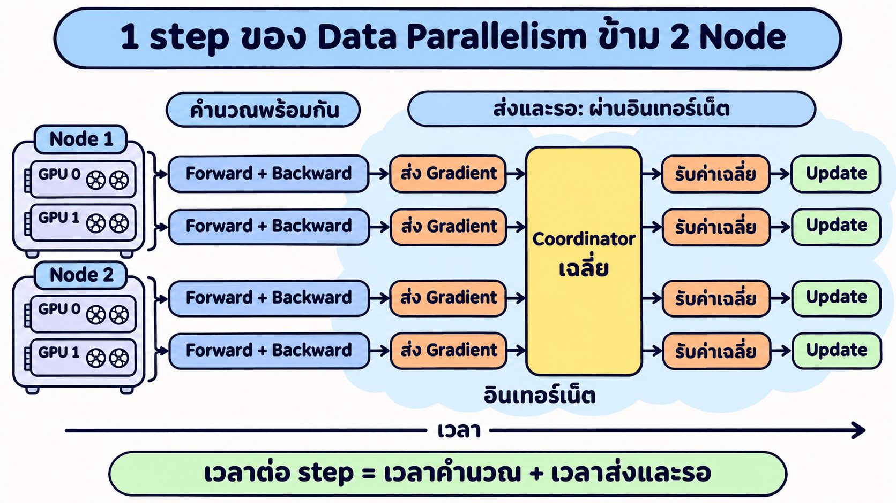
ขั้นที่ 1: เช่า 2 Node เตรียมโมเดลกับ Dataset และวัดเน็ตระหว่างเครื่องก่อนเทรน
vapp-lab5-dp-1 และ vapp-lab5-dp-2 โดย Node 1 เปิด 1 portQwen3-8B และแบ่ง sql-create-context (4,000 / 200 ด้วย seed 0) ให้ตรงกันทั้ง 2 Nodeพรอมต์ · LAB 5.1 ขั้นที่ 1 · เช่า 2 Node เตรียมของ และวัดเน็ตCopy & Paste
[ที่ทำงาน]
container `multi-account` · โฟลเดอร์ /workspace/vastapp_lab · สกิล vastai
กุญแจ SSH: /workspace/vastai_lab/Devtool_SSH/devtoolSSH
เก็บโค้ดและผลที่: lab5_cluster/1_data_parallel ของโฟลเดอร์ที่เปิด Claude Code อยู่ (ไม่ใช่ใน container)
[งาน]
เช่าเครื่อง 2 เครื่อง (เรียกว่า Node 1 และ Node 2) เครื่องละ GPU 2 ใบ แล้วเตรียมโมเดลกับ Dataset ให้ทั้งสอง Node
[เครื่องที่ต้องการ]
จำนวน: 2 เครื่อง ที่มี IP สาธารณะต่างกัน · ป้าย vapp-lab5-dp-1 และ vapp-lab5-dp-2
GPU: RTX 3090 2 ใบในเครื่องเดียว · ราคาไม่เกิน $0.60 ต่อชั่วโมงต่อเครื่อง
เงื่อนไข: verified · reliability 0.95 ขึ้นไป · เน็ตดาวน์โหลด 700 Mbps ขึ้นไป · ค่าดาวน์โหลดไม่เกิน $0.01 ต่อ GB · CPU 16 cores ขึ้นไป · ไม่อยู่ในจีน
ระบบ: PyTorch 2.8 ที่มี CUDA 12.8 · disk 60 GB · Node 1 เปิด port ให้เครื่องอื่นต่อเข้ามาได้ 1 port
[ขั้นตอน]
1. เช่าเครื่องที่ถูกที่สุดตามเงื่อนไขทั้ง 2 เครื่อง โดยเลือกให้อยู่ใกล้กัน ถ้าเครื่องไหนเกิน 10 นาทียังไม่พร้อม ให้ลบแล้วเช่าเครื่องอื่น
2. โหลดโมเดล Qwen/Qwen3-8B และ Dataset b-mc2/sql-create-context ลงทั้ง 2 Node
3. สับ Dataset ด้วย seed 0 แล้วแบ่ง Training Set 4,000 ตัวอย่าง และ Test Set 200 ตัวอย่าง ให้ทั้ง 2 Node ได้ชุดเดียวกัน
4. ทำตารางตัวอย่าง 6 รายการ (คำถาม · โครงสร้างตาราง · SQL เฉลย) เก็บที่ results/dataset_samples.md
5. วัดเน็ตระหว่าง 2 Node: Node 2 ต่อเข้า port ของ Node 1 ได้หรือไม่ · เวลาไปกลับ (RTT) · ความเร็วส่งข้อมูลทั้งสองทิศ
ถ้า RTT ของ Node ใดเกิน 100 ms ให้ลบเครื่องนั้นแล้วเช่าเครื่องใหม่แทน แล้ววัดซ้ำ (เปลี่ยนได้ไม่เกิน 2 ครั้ง)
[รายงาน]
สรุปเป็นตาราง: เครื่องที่ได้ของแต่ละ Node · ราคาต่อชั่วโมง · เน็ตระหว่าง Node (RTT และความเร็ว) · จำนวนตัวอย่างของแต่ละชุด
อธิบายตัวอย่าง 1 รายการว่าแต่ละช่องคืออะไร · ห้ามแสดงค่า key · บอกว่าเครื่องยังเปิดอยู่ผลวัดเน็ต DP 2 Node (ไต้หวันทั้งคู่): RTT ต่ำแค่ 5.95 ms แต่ส่งขึ้นได้เพียง 143 Mbps1_data_parallel/results/network.json
ขั้นที่ 2 ทำอะไร: 5 งานต่อเนื่องในพรอมต์เดียว เพื่อจับเวลาคำนวณเทียบส่งและรอ
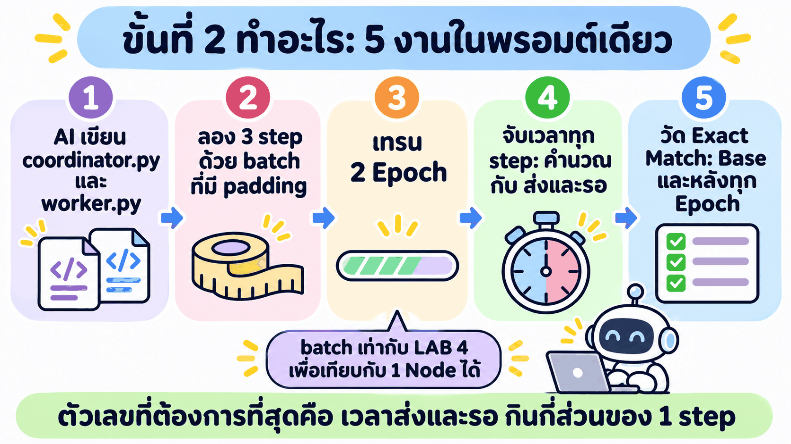
coordinator.py และ worker.py (4 ตัว) แล้ว ลอง 3 step ด้วย batch ที่มี padding ก่อนเทรนจริงeval.py วัด Exact Match บน Test Set 200 ข้อของ Base และหลังจบ Epoch 1 และ 2พรอมต์ · LAB 5.1 ขั้นที่ 2 · เทรนแบบ Data Parallelism ข้าม 2 NodeCopy & Paste
[ที่ทำงาน]
container `multi-account` · โฟลเดอร์ /workspace/vastapp_lab · สกิล vastai
เครื่อง: ป้าย vapp-lab5-dp-1 (Node 1) และ vapp-lab5-dp-2 (Node 2) · กุญแจ SSH: /workspace/vastai_lab/Devtool_SSH/devtoolSSH
เก็บโค้ดและผลที่: lab5_cluster/1_data_parallel ของโฟลเดอร์ที่เปิด Claude Code อยู่ (ไม่ใช่ใน container)
[งาน]
เทรน Qwen3-8B ให้แปลงคำถามเป็น SQL แบบ Data Parallelism บนคลัสเตอร์ 2 Node
แนวคิด: GPU ทั้ง 4 ใบถือโมเดลคนละชุด แบ่งข้อมูลใบละ 1 ใน 4 · ทุก step ส่ง Gradient ของ LoRA ไปเฉลี่ยที่โปรแกรมกลางบน Node 1 แล้วทุกใบปรับน้ำหนักด้วยค่าเฉลี่ยเดียวกัน
[ขั้นตอน]
1. เขียนโปรแกรมกลาง code/coordinator.py รันบน Node 1 เปิด port เดียว: รอ Gradient จากทุกโปรแกรมเทรนให้ครบ เฉลี่ย แล้วส่งค่าเฉลี่ยกลับ (Synchronous)
2. เขียนโปรแกรมเทรน code/worker.py เปิด 1 ตัวต่อ GPU รวม 4 ตัว แต่ละตัวต่อออกไปหาโปรแกรมกลาง และได้ข้อมูลคนละส่วนไม่ซ้ำกัน
3. ลอง 3 step ด้วย batch ที่มีตัวอย่างยาวที่สุดปนกับตัวอย่างสั้น (มี padding เหมือนตอนเทรนจริง) ถ้า Out of Memory ให้แก้โค้ดให้ใช้หน่วยความจำน้อยลง โดยไม่เปลี่ยนค่าที่ตรึง
4. เทรน 2 Epoch และจับเวลาของทุก step แยกเป็น 2 ส่วน: เวลาคำนวณบน GPU และเวลาส่งกับรอ Gradient
5. เขียน code/eval.py วัด Exact Match บน Test Set ของโมเดลก่อนเทรน (Base) และหลังจบแต่ละ Epoch (ไม่นับ ; ท้ายคำสั่งเป็นข้อผิด)
6. หลังจบแต่ละ Epoch ตรวจว่าน้ำหนัก LoRA ของทั้ง 4 ตัวเท่ากัน
7. ให้งานรันต่อได้แม้การเชื่อมต่อหลุด และรายงานทุก 2–3 นาที
[ค่าที่ตรึง]
โมเดล: Qwen/Qwen3-8B แบบ bf16 · ปิด thinking · ไม่ใช้ Gradient Checkpointing
LoRA: r 8 · alpha 16 · ที่ q_proj กับ v_proj
การเทรน: learning rate 2e-4 · seed 0 · ข้อความยาวไม่เกิน 256 token · 2 Epoch
batch: 4 ต่อ GPU (รวม 16) เท่ากับ batch ต่อ GPU ของ LAB 4.2 เพื่อเทียบกับผล 1 Node ได้
[รายงาน]
สรุปเป็นตาราง: batch ต่อ GPU และรวม · VRAM สูงสุดของแต่ละใบ · วินาทีต่อ step (แยกเวลาคำนวณ กับเวลาส่งและรอ) · ขนาด Gradient ที่ส่งต่อ step · ตัวอย่างต่อวินาที · GPU util ของแต่ละใบ · loss และ Exact Match ของ Base และหลังจบแต่ละ Epoch
บอกว่าเครื่องยังเปิดอยู่แก้ OOM ตอนลอง 3 step ใน DP 2 Node: คิดคะแนนเฉพาะคำตอบ
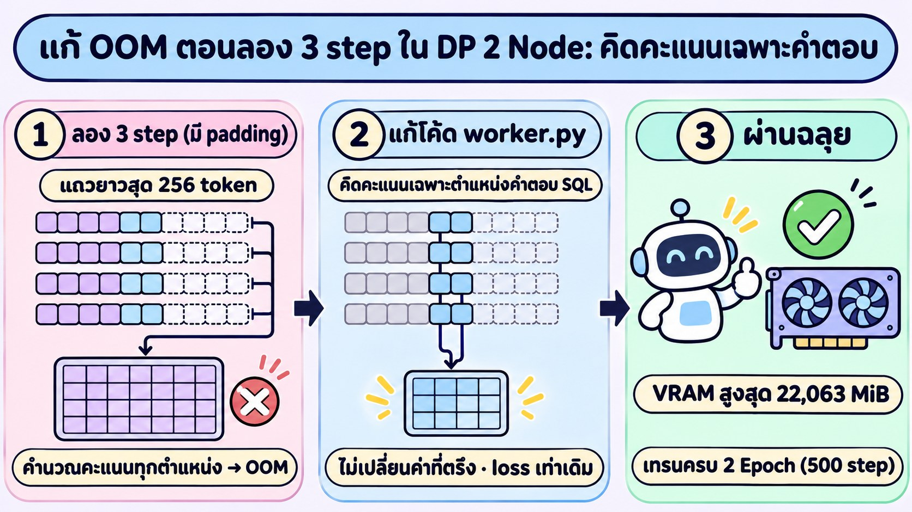
worker.py โดยไม่แตะค่าที่ตรึง คำนวณ logits เฉพาะตำแหน่งที่เป็นคำตอบ SQL ซึ่งให้ค่า loss เท่าเดิมทุกประการผล DP 2 Node: ได้ 4.50 ตัวอย่าง/วิ · ส่งและรอ 88% ของ step · GPU util เหลือ 12.7%1_data_parallel/results/summary.json
float32 เต็ม (15.34 MB ต่อ Worker ทั้งขาขึ้นและขาลง) · Epoch 1 เน็ตสะดุดได้ 3.63 ตัวอย่าง/วิ ส่วน Epoch 2 เน็ตนิ่งขึ้นได้ 5.92DP 2 Node · 88% ของทุก step คือแถบสีส้ม (ส่งและรอ) และมีช่วงเน็ตค้างพุ่งถึง 19 วิ1_data_parallel/results/metrics.json
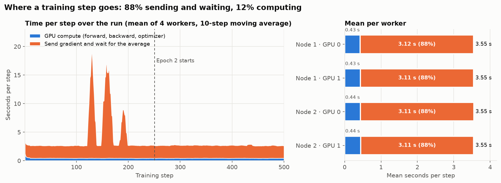
ด้านซ้าย: แถบสีน้ำเงิน (คำนวณ 0.43 วิ) บางติดก้นกราฟ ส่วนช่วง step 120–200 เน็ตสะดุด 16 step (สูงสุด 44 วิ) · ด้านขวา: Worker ทั้ง 4 ตัวรอเท่ากัน
DP 2 Node · GPU ทั้ง 4 ใบอยู่ที่ 0% เกือบตลอดเวลา เฉลี่ยเพียง 12.4–12.8%1_data_parallel/results/train/
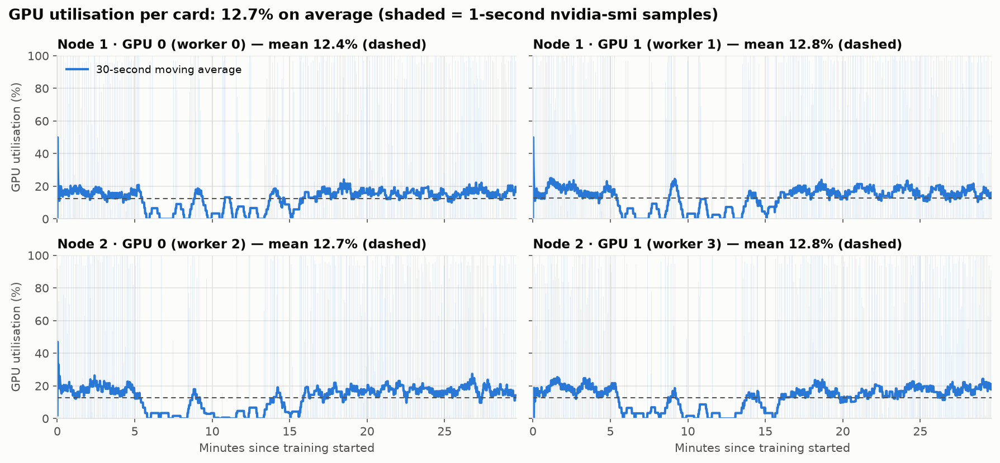
เทียบกับ 1 Node ใน LAB 4.2 ที่ GPU util ราว 98% · เมื่อรอเน็ตข้ามเครื่อง การ์ดจะพุ่งขึ้น 100% เป็นจังหวะสั้น ๆ แล้วหล่นกลับไปรอที่ 0%
DP 2 Node · Loss ลดลงราบรื่นตลอด 500 step แสดงว่าการเฉลี่ยข้ามเครื่องทำงานถูกต้อง1_data_parallel/results/metrics.json
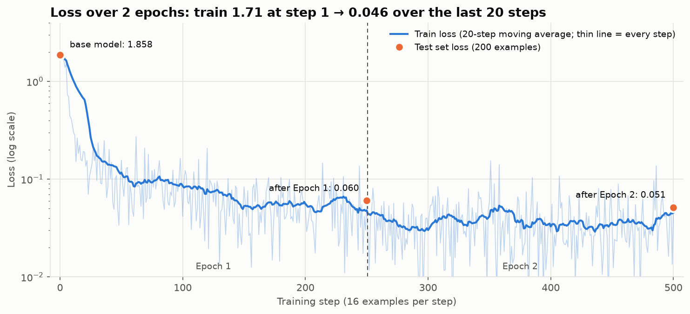
train loss ลดจาก 0.1198 → 0.0371 · test loss ลดจาก Base 1.8575 เหลือ 0.0603 และ 0.0515 หลังจบ Epoch 1 และ 2
DP 2 Node · Exact Match พุ่งจาก 1.5% เป็น 72.5% และจบ Epoch 2 ที่ 75.0%1_data_parallel/results/summary.json
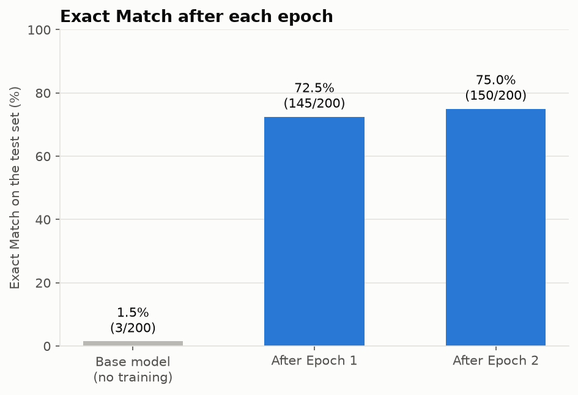
ใกล้เคียงกับ 1 Node (77.5% หลัง Epoch 2) ต่างกัน 5 ข้อจาก 200 · น้ำหนัก LoRA ของ Worker ทั้ง 4 ตัวตรงกันทุกค่าหลังจบทั้ง 2 Epoch
พรอมต์ · LAB 5.1 ขั้นที่ 3 · สรุปผลและลบเครื่องทั้ง 2 Node (ห้ามข้าม)Copy & Paste
[ที่ทำงาน]
container `multi-account` · โฟลเดอร์ /workspace/vastapp_lab · สกิล vastai
เครื่อง: ป้าย vapp-lab5-dp-1 (Node 1) และ vapp-lab5-dp-2 (Node 2) · กุญแจ SSH: /workspace/vastai_lab/Devtool_SSH/devtoolSSH
เก็บโค้ดและผลที่: lab5_cluster/1_data_parallel ของโฟลเดอร์ที่เปิด Claude Code อยู่ (ไม่ใช่ใน container)
[งาน]
สรุปผลเป็นกราฟ แล้วลบเครื่องทั้ง 2 Node
[ขั้นตอน]
1. นำผลดิบของทั้ง 2 Node กลับมาที่ results/raw
2. เขียน code/report.py รวมตัวเลขลง results/metrics.json พร้อมเงินต่อ 1,000 ตัวอย่าง (คิดจากราคาของ 2 เครื่องรวมกัน)
3. ให้สคริปต์วาดกราฟที่ results/images (ข้อความอังกฤษ): เวลาต่อ step แยกเวลาคำนวณกับเวลาส่งและรอ · GPU util ของแต่ละใบ · loss ตลอด 2 Epoch · Exact Match ของแต่ละ Epoch
4. ลบเครื่องป้าย vapp-lab5-dp-1 และ vapp-lab5-dp-2 แล้วตรวจว่าไม่เหลือ (ห้ามแตะเครื่องป้ายอื่น)
[รายงาน]
สรุปเป็นตาราง: ตัวอย่างต่อวินาที · สัดส่วนเวลาที่ใช้ส่งและรอ · Exact Match · เงินต่อ 1,000 ตัวอย่าง
ค่าใช้จ่ายจริงของแต่ละเครื่อง: อายุเครื่อง · ยอดที่ถูกคิด · ห้ามแสดงค่า keyขยาย DP จาก 2 Node เป็น 3 Node (6 โมเดล): batch รวมเป็น 24 แต่ต้องรอครบ 6 ตัว
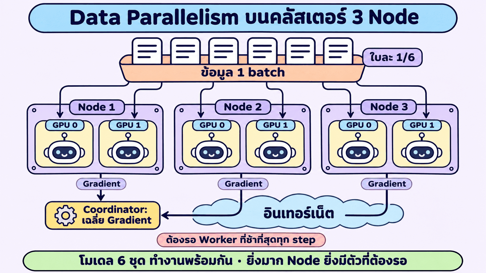
ขั้นที่ 4: เช่า 3 Node ให้ใกล้กัน เตรียมของ และวัดเน็ตทั้ง 2 เส้นทางเข้า Node 1
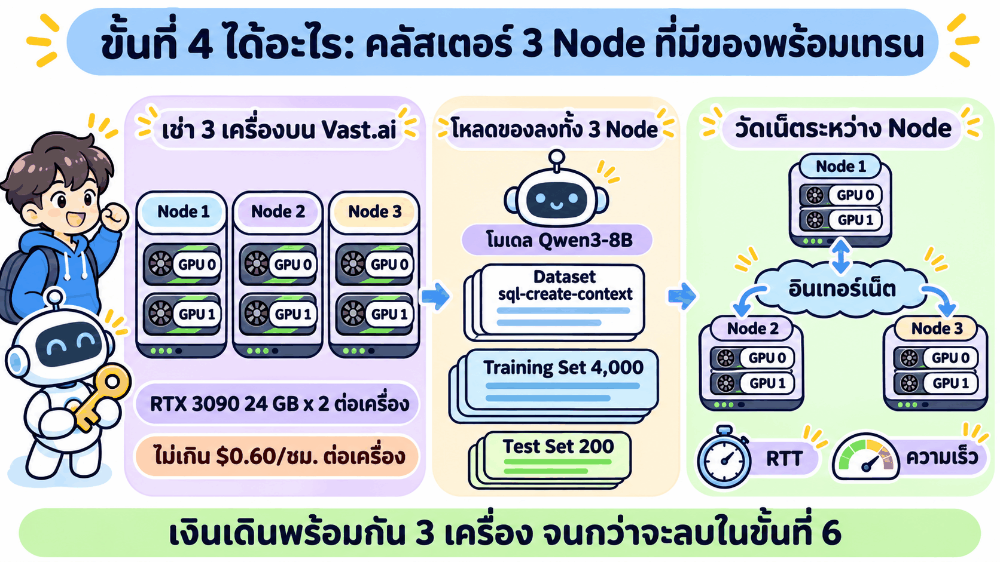
vapp-lab5-3dp-1, vapp-lab5-3dp-2, vapp-lab5-3dp-3 เก็บงานแยกใน 1_data_parallel/node3/Node 2 ↔ Node 1 และ Node 3 ↔ Node 1 โดยตั้งเกณฑ์ RTT ไม่เกิน 100 ms เช่นเดิมพรอมต์ · LAB 5.1 ขั้นที่ 4 · เช่า 3 Node เตรียมของ และวัดเน็ตCopy & Paste
[ที่ทำงาน]
container `multi-account` · โฟลเดอร์ /workspace/vastapp_lab · สกิล vastai
กุญแจ SSH: /workspace/vastai_lab/Devtool_SSH/devtoolSSH
เก็บโค้ดและผลที่: lab5_cluster/1_data_parallel/node3 ของโฟลเดอร์ที่เปิด Claude Code อยู่ (ไม่ใช่ใน container)
[งาน]
เช่าเครื่อง 3 เครื่อง (เรียกว่า Node 1 Node 2 และ Node 3) เครื่องละ GPU 2 ใบ แล้วเตรียมโมเดลกับ Dataset ให้ทั้ง 3 Node
[เครื่องที่ต้องการ]
จำนวน: 3 เครื่อง ที่มี IP สาธารณะต่างกัน · ป้าย vapp-lab5-3dp-1 vapp-lab5-3dp-2 และ vapp-lab5-3dp-3
GPU: RTX 3090 2 ใบในเครื่องเดียว · ราคาไม่เกิน $0.60 ต่อชั่วโมงต่อเครื่อง
เงื่อนไข: verified · reliability 0.95 ขึ้นไป · เน็ตดาวน์โหลด 700 Mbps ขึ้นไป · ค่าดาวน์โหลดไม่เกิน $0.01 ต่อ GB · CPU 16 cores ขึ้นไป · ไม่อยู่ในจีน
ระบบ: PyTorch 2.8 ที่มี CUDA 12.8 · disk 60 GB · Node 1 เปิด port ให้เครื่องอื่นต่อเข้ามาได้ 1 port
[ขั้นตอน]
1. เช่าเครื่องที่ถูกที่สุดตามเงื่อนไขทั้ง 3 เครื่อง โดยเลือกให้อยู่ใกล้กัน ถ้าเครื่องไหนเกิน 10 นาทียังไม่พร้อม ให้ลบแล้วเช่าเครื่องอื่น
2. โหลดโมเดล Qwen/Qwen3-8B และ Dataset b-mc2/sql-create-context ลงทั้ง 3 Node
3. สับ Dataset ด้วย seed 0 แล้วแบ่ง Training Set 4,000 ตัวอย่าง และ Test Set 200 ตัวอย่าง ให้ทั้ง 3 Node ได้ชุดเดียวกัน
4. ทำตารางตัวอย่าง 6 รายการ (คำถาม · โครงสร้างตาราง · SQL เฉลย) เก็บที่ results/dataset_samples.md
5. วัดเน็ตระหว่าง Node: Node 2 และ Node 3 ต่อเข้า port ของ Node 1 ได้หรือไม่ · เวลาไปกลับ (RTT) · ความเร็วส่งข้อมูลทั้งสองทิศ
ถ้า RTT ของ Node ใดเกิน 100 ms ให้ลบเครื่องนั้นแล้วเช่าเครื่องใหม่แทน แล้ววัดซ้ำ (เปลี่ยนได้ไม่เกิน 2 ครั้ง)
[รายงาน]
สรุปเป็นตาราง: เครื่องที่ได้ของแต่ละ Node · ราคาต่อชั่วโมง · เน็ตระหว่าง Node (RTT และความเร็ว) · จำนวนตัวอย่างของแต่ละชุด
อธิบายตัวอย่าง 1 รายการว่าแต่ละช่องคืออะไร · ห้ามแสดงค่า key · บอกว่าเครื่องยังเปิดอยู่ผลวัดเน็ต DP 3 Node (ยุโรป 3 ประเทศ): RTT 74–81 ms ผ่านเกณฑ์ แต่ขาลงไป Node 3 เหลือ 73.2 Mbpsnode3/results/network_*.json
| เส้นทาง | RTT เฉลี่ย | ส่งไป Node 1 | รับจาก Node 1 |
|---|---|---|---|
| Node 2 ↔ Node 1 | 73.6 ms | 281.6 Mbps | 185.8 Mbps |
| Node 3 ↔ Node 1 | 81.2 ms | 233.9 Mbps | 73.2 Mbps |
พรอมต์ · LAB 5.1 ขั้นที่ 5 · เทรนแบบ Data Parallelism ข้าม 3 NodeCopy & Paste
[ที่ทำงาน]
container `multi-account` · โฟลเดอร์ /workspace/vastapp_lab · สกิล vastai
เครื่อง: ป้าย vapp-lab5-3dp-1 (Node 1) vapp-lab5-3dp-2 (Node 2) และ vapp-lab5-3dp-3 (Node 3) · กุญแจ SSH: /workspace/vastai_lab/Devtool_SSH/devtoolSSH
เก็บโค้ดและผลที่: lab5_cluster/1_data_parallel/node3 ของโฟลเดอร์ที่เปิด Claude Code อยู่ (ไม่ใช่ใน container)
[งาน]
เทรน Qwen3-8B ให้แปลงคำถามเป็น SQL แบบ Data Parallelism บนคลัสเตอร์ 3 Node
แนวคิด: GPU ทั้ง 6 ใบถือโมเดลคนละชุด แบ่งข้อมูลใบละ 1 ใน 6 · ทุก step ส่ง Gradient ของ LoRA ไปเฉลี่ยที่โปรแกรมกลางบน Node 1 แล้วทุกใบปรับน้ำหนักด้วยค่าเฉลี่ยเดียวกัน
[ขั้นตอน]
1. เขียนโปรแกรมกลาง code/coordinator.py รันบน Node 1 เปิด port เดียว: รอ Gradient จากทุกโปรแกรมเทรนให้ครบ เฉลี่ย แล้วส่งค่าเฉลี่ยกลับ (Synchronous)
2. เขียนโปรแกรมเทรน code/worker.py เปิด 1 ตัวต่อ GPU รวม 6 ตัว แต่ละตัวต่อออกไปหาโปรแกรมกลาง และได้ข้อมูลคนละส่วนไม่ซ้ำกัน
3. ลอง 3 step ด้วย batch ที่มีตัวอย่างยาวที่สุดปนกับตัวอย่างสั้น (มี padding เหมือนตอนเทรนจริง) ถ้า Out of Memory ให้แก้โค้ดให้ใช้หน่วยความจำน้อยลง โดยไม่เปลี่ยนค่าที่ตรึง
4. เทรน 2 Epoch และจับเวลาของทุก step แยกเป็น 2 ส่วน: เวลาคำนวณบน GPU และเวลาส่งกับรอ Gradient
5. เขียน code/eval.py วัด Exact Match บน Test Set ของโมเดลก่อนเทรน (Base) และหลังจบแต่ละ Epoch (ไม่นับ ; ท้ายคำสั่งเป็นข้อผิด)
6. หลังจบแต่ละ Epoch ตรวจว่าน้ำหนัก LoRA ของทั้ง 6 ตัวเท่ากัน
7. ให้งานรันต่อได้แม้การเชื่อมต่อหลุด และรายงานทุก 2–3 นาที
[ค่าที่ตรึง]
โมเดล: Qwen/Qwen3-8B แบบ bf16 · ปิด thinking · ไม่ใช้ Gradient Checkpointing
LoRA: r 8 · alpha 16 · ที่ q_proj กับ v_proj
การเทรน: learning rate 2e-4 · seed 0 · ข้อความยาวไม่เกิน 256 token · 2 Epoch
batch: 4 ต่อ GPU (รวม 24) เท่ากับ batch ต่อ GPU ของ LAB 4.2 เพื่อเทียบกับผล 1 Node และ 2 Node ได้
[รายงาน]
สรุปเป็นตาราง: batch ต่อ GPU และรวม · VRAM สูงสุดของแต่ละใบ · วินาทีต่อ step (แยกเวลาคำนวณ กับเวลาส่งและรอ) · ขนาด Gradient ที่ส่งต่อ step · ตัวอย่างต่อวินาที · GPU util ของแต่ละใบ · loss และ Exact Match ของ Base และหลังจบแต่ละ Epoch
บอกว่าเครื่องยังเปิดอยู่บทเรียน 3 Node: ตั้งขนาด socket buffer เองทำให้ช้าลงหลายเท่า
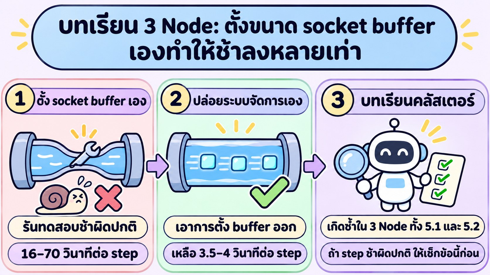
bf16 (7.67 MB) เอง ทำให้ขนาดเล็กลงครึ่งหนึ่ง แต่ขาลงยังส่ง float32 เต็ม (15.34 MB)ผล DP 3 Node: ได้ 4.49 ตัวอย่าง/วิ (เท่า 2 Node) — ส่งและรอ 93%, GPU util 6.6%1_data_parallel/node3/results/summary.json
bf16 ครึ่งขนาดแล้ว แต่มี 5 step ที่เน็ตค้างเกิน 15 วิ (ช้าสุด 128 วิ) ยิ่งมากเส้นทาง ยิ่งมีโอกาสสะดุดDP 3 Node · 93–94% ของเวลาคือการส่งและรอ และมี 4 step ที่เครือข่ายค้าง 29–128 วินาที1_data_parallel/node3/results/metrics.json
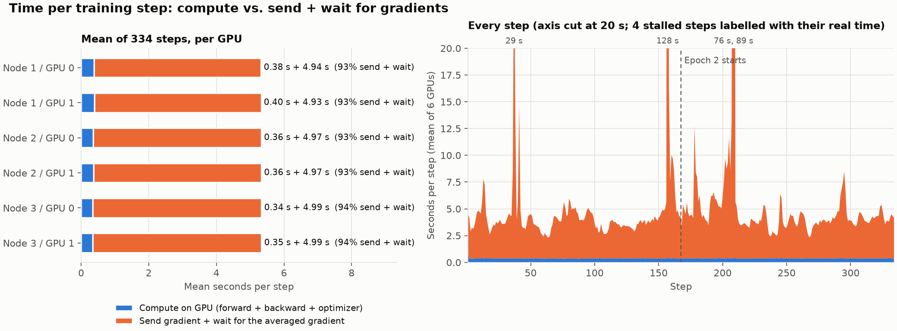
ด้านซ้าย: ทั้ง 6 GPU คำนวณเพียง 0.34–0.40 วิ แต่รอเกือบ 5 วิ · ด้านขวา: ช่วง step 155–210 เน็ตค้างสูงสุด 128 วิ
DP 3 Node · GPU ทั้ง 6 ใบทำงานเฉลี่ยเพียง 6.1–7.0% ตลอด 29.7 นาที1_data_parallel/node3/results/raw/
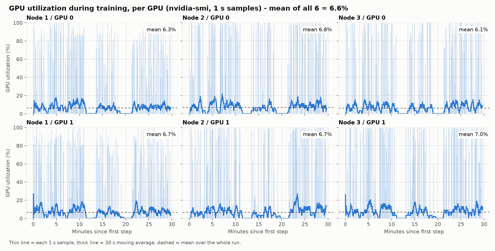
เพิ่ม GPU เป็น 6 ใบใน 3 เครื่อง แต่เวลาแทบทั้งหมดหมดไปกับการรอเครือข่ายข้ามประเทศ ทำให้ GPU ว่างราว 93% ของเวลา
DP 3 Node · Loss ลดลงราบรื่นตลอด 334 step แม้มีจังหวะเน็ตค้างกลางทาง1_data_parallel/node3/results/metrics.json
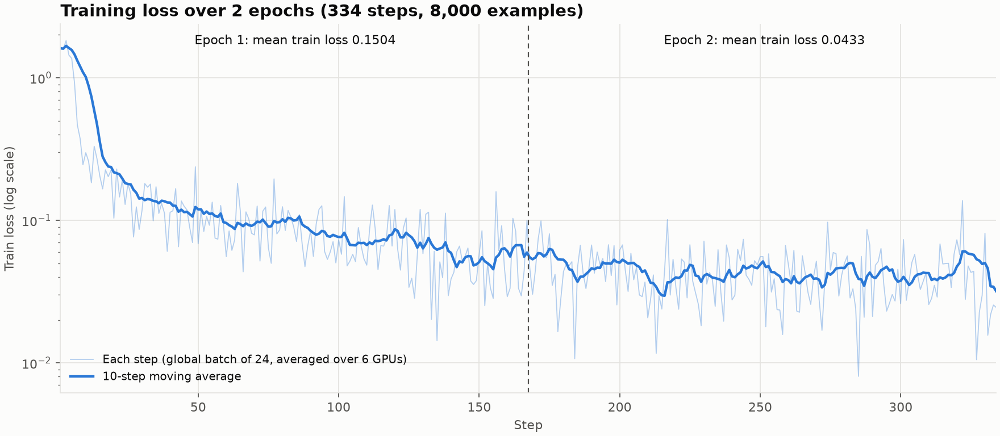
train loss ลดจาก 0.1504 → 0.0433 · test loss ลดจาก Base 1.8470 เหลือ 0.0639 และ 0.0564 หลังจบ Epoch 1 และ 2
DP 3 Node · Exact Match จบ Epoch 2 ที่ 74.5% (test loss 0.0564) น้ำหนัก LoRA ตรงกันทั้ง 6 ตัว1_data_parallel/node3/results/summary.json
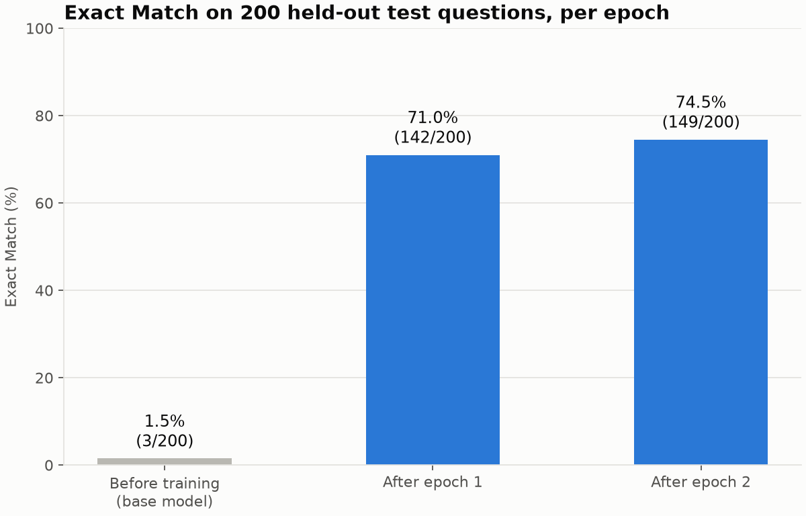
Base 1.5% → Epoch 1: 71.0% (test loss 0.0639) → Epoch 2: 74.5% (test loss 0.0564) · sha256 ของ LoRA ตรงกันทั้ง 6 Worker
พรอมต์ · LAB 5.1 ขั้นที่ 6 · สรุปผลและลบเครื่องทั้ง 3 Node (ห้ามข้าม)Copy & Paste
[ที่ทำงาน]
container `multi-account` · โฟลเดอร์ /workspace/vastapp_lab · สกิล vastai
เครื่อง: ป้าย vapp-lab5-3dp-1 (Node 1) vapp-lab5-3dp-2 (Node 2) และ vapp-lab5-3dp-3 (Node 3) · กุญแจ SSH: /workspace/vastai_lab/Devtool_SSH/devtoolSSH
เก็บโค้ดและผลที่: lab5_cluster/1_data_parallel/node3 ของโฟลเดอร์ที่เปิด Claude Code อยู่ (ไม่ใช่ใน container)
[งาน]
สรุปผลเป็นกราฟ แล้วลบเครื่องทั้ง 3 Node
[ขั้นตอน]
1. นำผลดิบของทั้ง 3 Node กลับมาที่ results/raw
2. เขียน code/report.py รวมตัวเลขลง results/metrics.json พร้อมเงินต่อ 1,000 ตัวอย่าง (คิดจากราคาของ 3 เครื่องรวมกัน)
3. ให้สคริปต์วาดกราฟที่ results/images (ข้อความอังกฤษ): เวลาต่อ step แยกเวลาคำนวณกับเวลาส่งและรอ · GPU util ของแต่ละใบ · loss ตลอด 2 Epoch · Exact Match ของแต่ละ Epoch
4. ลบเครื่องป้าย vapp-lab5-3dp-1 vapp-lab5-3dp-2 และ vapp-lab5-3dp-3 แล้วตรวจว่าไม่เหลือ (ห้ามแตะเครื่องป้ายอื่น)
[รายงาน]
สรุปเป็นตาราง: ตัวอย่างต่อวินาที · สัดส่วนเวลาที่ใช้ส่งและรอ · Exact Match · เงินต่อ 1,000 ตัวอย่าง
ค่าใช้จ่ายจริงของแต่ละเครื่อง: อายุเครื่อง · ยอดที่ถูกคิด · ห้ามแสดงค่า keyสรุป LAB 5.1 (Data Parallelism): 1 Node เร็วกว่า 2 และ 3 Node ผ่านอินเทอร์เน็ตถึง 4 เท่าตารางหลัก · LAB 5.1
| 1 Node (LAB 4.2) | 2 Node | 3 Node | |
|---|---|---|---|
| GPU ทั้งหมด | 2 | 4 | 6 |
| ทางที่ GPU ส่ง Gradient ถึงกัน | ในเครื่อง (PCIe) | อินเทอร์เน็ต · RTT 6 ms · 143 Mbps ในทิศที่ช้า | อินเทอร์เน็ต · RTT 74–81 ms · 73 Mbps ในทิศที่ช้า |
| batch ต่อ GPU / รวม | 4 / 8 | 4 / 16 | 4 / 24 |
| วินาทีต่อ step | 0.419 | 3.56 | 5.34 |
| – คำนวณ | – | 0.43 | 0.36 |
| – ส่งและรอ | สั้นมาก (GPU util ราว 98%) | 3.11 (88%) | 4.97 (93%) |
| ตัวอย่างต่อวินาที | 19.08 | 4.50 | 4.49 |
| Speedup เทียบ 1 Node | 1.00 | 0.24 | 0.24 |
| Efficiency | 100% | 12% | 8% |
| GPU util เฉลี่ย | 97.8% / 98.6% | 12.7% | 6.6% |
| Exact Match หลัง Epoch 1 → 2 | 70.0% → 77.5% | 72.5% → 75.0% | 71.0% → 74.5% |
Model Parallelism บนคลัสเตอร์ · แบ่งโมเดลในเครื่อง เฉลี่ยข้ามเครื่อง
คำถาม: แต่ละเครื่องแบ่ง Layer ของโมเดลลง GPU 2 ใบ แล้วเฉลี่ย Gradient ข้าม 2 และ 3 Node จะเร็วขึ้นกี่เท่าเทียบกับ 1 Node ของ LAB 4.3
โฟลเดอร์: 2_model_parallel/ (ขั้น 1–3 · 2 Node = 2 โมเดล) และ 2_model_parallel/node3/ (ขั้น 4–6 · 3 Node = 3 โมเดล)
ทบทวน Model Parallelism ในเครื่องเดียว: แบ่ง Layer ลง 2 ใบ ได้ที่ว่าง VRAM แต่ผลัดกันทำ

embed + Layer 0–17 และ GPU 1 ถือ Layer 18–35 + norm + lm_headbatch = 8 ต่อเครื่องได้สบาย (GPU ใบเดียวได้แค่ 4) แต่ GPU 2 ใบผลัดกันทำ util จึงอยู่ราว 49%1 step ของ Model Parallelism ในเครื่องเดียว: GPU 0 และ GPU 1 ผลัดกันคำนวณทีละใบ

ต่อ Model Parallelism ข้าม 2 Node: ในเครื่องแบ่ง Layer ข้ามเครื่องแบ่งข้อมูล (Hybrid)
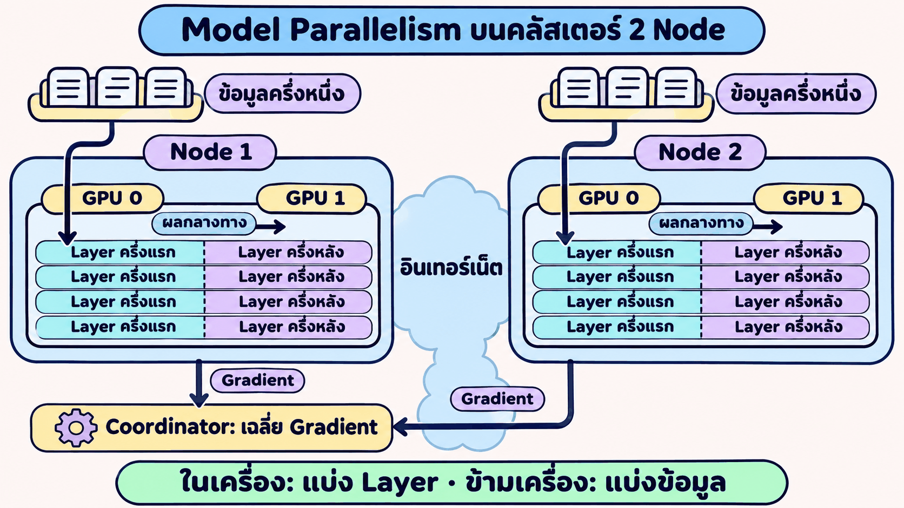
batch = 8 ต่อ Node · batch รวม = 16)1 step ของ MP บน 2 Node: GPU ต้องรอ 2 ชั้น ทั้งรออีกใบในเครื่องและรอเน็ตข้ามเครื่อง
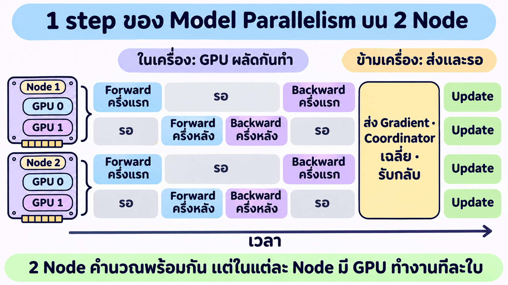
พรอมต์ · LAB 5.2 ขั้นที่ 1 · เช่า 2 Node เตรียมของ และวัดเน็ตCopy & Paste
[ที่ทำงาน]
container `multi-account` · โฟลเดอร์ /workspace/vastapp_lab · สกิล vastai
กุญแจ SSH: /workspace/vastai_lab/Devtool_SSH/devtoolSSH
เก็บโค้ดและผลที่: lab5_cluster/2_model_parallel ของโฟลเดอร์ที่เปิด Claude Code อยู่ (ไม่ใช่ใน container)
[งาน]
เช่าเครื่อง 2 เครื่อง (เรียกว่า Node 1 และ Node 2) เครื่องละ GPU 2 ใบ แล้วเตรียมโมเดลกับ Dataset ให้ทั้งสอง Node
[เครื่องที่ต้องการ]
จำนวน: 2 เครื่อง ที่มี IP สาธารณะต่างกัน · ป้าย vapp-lab5-mp-1 และ vapp-lab5-mp-2
GPU: RTX 3090 2 ใบในเครื่องเดียว · ราคาไม่เกิน $0.60 ต่อชั่วโมงต่อเครื่อง
เงื่อนไข: verified · reliability 0.95 ขึ้นไป · เน็ตดาวน์โหลด 700 Mbps ขึ้นไป · ค่าดาวน์โหลดไม่เกิน $0.01 ต่อ GB · CPU 16 cores ขึ้นไป · ไม่อยู่ในจีน
ระบบ: PyTorch 2.8 ที่มี CUDA 12.8 · disk 60 GB · Node 1 เปิด port ให้เครื่องอื่นต่อเข้ามาได้ 1 port
[ขั้นตอน]
1. เช่าเครื่องที่ถูกที่สุดตามเงื่อนไขทั้ง 2 เครื่อง โดยเลือกให้อยู่ใกล้กัน ถ้าเครื่องไหนเกิน 10 นาทียังไม่พร้อม ให้ลบแล้วเช่าเครื่องอื่น
2. โหลดโมเดล Qwen/Qwen3-8B และ Dataset b-mc2/sql-create-context ลงทั้ง 2 Node
3. สับ Dataset ด้วย seed 0 แล้วแบ่ง Training Set 4,000 ตัวอย่าง และ Test Set 200 ตัวอย่าง ให้ทั้ง 2 Node ได้ชุดเดียวกัน
4. ทำตารางตัวอย่าง 6 รายการ (คำถาม · โครงสร้างตาราง · SQL เฉลย) เก็บที่ results/dataset_samples.md
5. วัดเน็ตระหว่าง 2 Node: Node 2 ต่อเข้า port ของ Node 1 ได้หรือไม่ · เวลาไปกลับ (RTT) · ความเร็วส่งข้อมูลทั้งสองทิศ
ถ้า RTT ของ Node ใดเกิน 100 ms ให้ลบเครื่องนั้นแล้วเช่าเครื่องใหม่แทน แล้ววัดซ้ำ (เปลี่ยนได้ไม่เกิน 2 ครั้ง)
[รายงาน]
สรุปเป็นตาราง: เครื่องที่ได้ของแต่ละ Node · ราคาต่อชั่วโมง · เน็ตระหว่าง Node (RTT และความเร็ว) · จำนวนตัวอย่างของแต่ละชุด
อธิบายตัวอย่าง 1 รายการว่าแต่ละช่องคืออะไร · ห้ามแสดงค่า key · บอกว่าเครื่องยังเปิดอยู่ผลวัดเน็ต MP 2 Node (ฝรั่งเศส–เช็กเกีย): วัดได้เพียง 81.7–82.7 Mbps ช้ากว่าประกาศ 8 เท่า2_model_parallel/results/network_test.json
พรอมต์ · LAB 5.2 ขั้นที่ 2 · เทรนแบบ Model Parallelism ข้าม 2 NodeCopy & Paste
[ที่ทำงาน]
container `multi-account` · โฟลเดอร์ /workspace/vastapp_lab · สกิล vastai
เครื่อง: ป้าย vapp-lab5-mp-1 (Node 1) และ vapp-lab5-mp-2 (Node 2) · กุญแจ SSH: /workspace/vastai_lab/Devtool_SSH/devtoolSSH
เก็บโค้ดและผลที่: lab5_cluster/2_model_parallel ของโฟลเดอร์ที่เปิด Claude Code อยู่ (ไม่ใช่ใน container)
[งาน]
เทรน Qwen3-8B ให้แปลงคำถามเป็น SQL แบบ Model Parallelism บนคลัสเตอร์ 2 Node
แนวคิด: แต่ละ Node ถือโมเดล 1 ชุด แบ่ง Layer ครึ่งแรกไว้ GPU 0 ครึ่งหลังไว้ GPU 1 · สอง Node แบ่งข้อมูลคนละครึ่ง · ทุก step ส่ง Gradient ของ LoRA ไปเฉลี่ยที่โปรแกรมกลางบน Node 1 แล้วทั้งสอง Node ปรับน้ำหนักด้วยค่าเฉลี่ยเดียวกัน
[ขั้นตอน]
1. เขียนโปรแกรมกลาง code/coordinator.py รันบน Node 1 เปิด port เดียว: รอ Gradient จากทุก Node ให้ครบ เฉลี่ย แล้วส่งค่าเฉลี่ยกลับ (Synchronous)
2. เขียนโปรแกรมเทรน code/worker.py เปิด 1 ตัวต่อ Node รวม 2 ตัว แต่ละตัวแบ่งโมเดลชุดเดียวลง GPU 2 ใบของ Node นั้น ต่อออกไปหาโปรแกรมกลาง และได้ข้อมูลคนละครึ่งไม่ซ้ำกัน
3. ลอง 3 step ด้วย batch ที่มีตัวอย่างยาวที่สุดปนกับตัวอย่างสั้น (มี padding เหมือนตอนเทรนจริง) ถ้า Out of Memory ให้แก้โค้ดให้ใช้หน่วยความจำน้อยลง โดยไม่เปลี่ยนค่าที่ตรึง
4. เทรน 2 Epoch และจับเวลาของทุก step แยกเป็น 2 ส่วน: เวลาคำนวณบน GPU และเวลาส่งกับรอ Gradient
5. เขียน code/eval.py วัด Exact Match บน Test Set ของโมเดลก่อนเทรน (Base) และหลังจบแต่ละ Epoch (ไม่นับ ; ท้ายคำสั่งเป็นข้อผิด)
6. หลังจบแต่ละ Epoch ตรวจว่าน้ำหนัก LoRA ของทั้ง 2 Node เท่ากัน
7. ให้งานรันต่อได้แม้การเชื่อมต่อหลุด และรายงานทุก 2–3 นาที
[ค่าที่ตรึง]
โมเดล: Qwen/Qwen3-8B แบบ bf16 · ปิด thinking · ไม่ใช้ Gradient Checkpointing
LoRA: r 8 · alpha 16 · ที่ q_proj กับ v_proj
การเทรน: learning rate 2e-4 · seed 0 · ข้อความยาวไม่เกิน 256 token · 2 Epoch
batch: 8 ต่อ Node (รวม 16) เท่ากับ batch ของ LAB 4.3 เพื่อเทียบกับผล 1 Node ได้
[รายงาน]
สรุปเป็นตาราง: batch ต่อ Node และรวม · Layer ไหนอยู่ใบไหน · VRAM สูงสุดของแต่ละใบ · วินาทีต่อ step (แยกเวลาคำนวณ กับเวลาส่งและรอ) · ขนาด Gradient ที่ส่งต่อ step · ตัวอย่างต่อวินาที · GPU util ของแต่ละใบ · loss และ Exact Match ของ Base และหลังจบแต่ละ Epoch
บอกว่าเครื่องยังเปิดอยู่รับมือปัญหาหน้างาน MP 2 Node: 4 สาย TCP และต่อจาก checkpoint
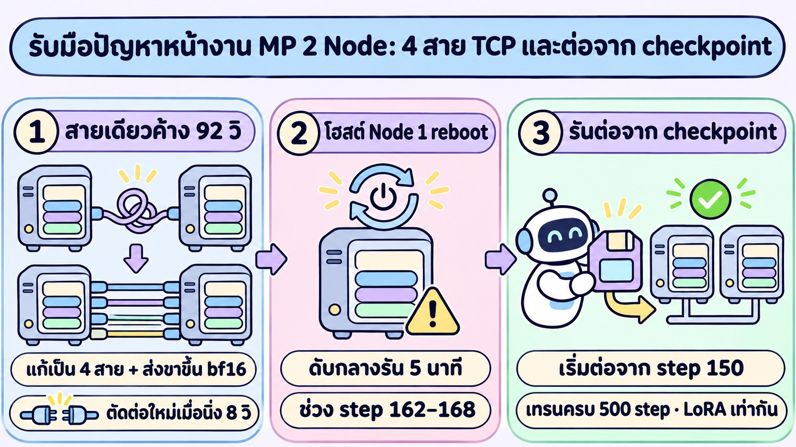
bf16 (ขนาดครึ่งเดียว) และตัดต่อใหม่เมื่อข้อมูลนิ่ง 8 วินาทีMP 2 Node · แบ่ง Layer 18+18 เหมือนกันทั้ง 2 เครื่อง ใช้ VRAM เพียง 14.0–14.4 GiB2_model_parallel/results/metrics.json
| GPU | ถืออะไร | VRAM สูงสุด Node 1 / Node 2 |
|---|---|---|
| GPU 0 | embed_tokens + Layer 0–17 (18 Layer) | 14,312 / 14,332 MiB |
| GPU 1 | Layer 18–35 (18 Layer) + norm + lm_head | 14,694 / 14,696 MiB |
batch = 8 ต่อ Node ผ่านการลอง 3 step ตั้งแต่ครั้งแรก ไม่เกิด Out of Memory ต่างจาก DP ที่ชนเพดาน 22.2 GiBผล MP 2 Node: ได้ 4.90 ตัวอย่าง/วิ · ส่งและรอ 78.5% · GPU util เหลือราว 10%2_model_parallel/results/summary.json
bf16 (7.67 MB) ผ่าน 4 สาย TCP และรับค่าเฉลี่ย float32 (15.34 MB) · ตัวเลข 4.90 ไม่นับช่วงที่โฮสต์ Node 1 ดับ 5 นาทีMP 2 Node · ส่งและรอกิน 78.5% ของทุก step และมีช่วงพุ่งแตะ 13 วิช่วงกลาง Epoch 12_model_parallel/results/metrics.json
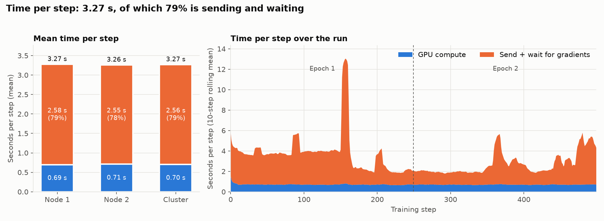
ด้านซ้าย: เวลาคำนวณ 0.69–0.71 วิ (ใกล้เคียง 0.79 วิ ของ 1 Node) แต่เวลาส่งและรอ 2.56 วิ · ด้านขวา: Epoch 2 เน็ตนิ่งกว่า Epoch 1 (5.76 เทียบ 4.27 ตัวอย่าง/วิ)
MP 2 Node · GPU util เฉลี่ยเหลือ 9.4–10.8% เพราะรอทั้งในเครื่องและข้ามเครื่องซ้อนกัน2_model_parallel/results/run/
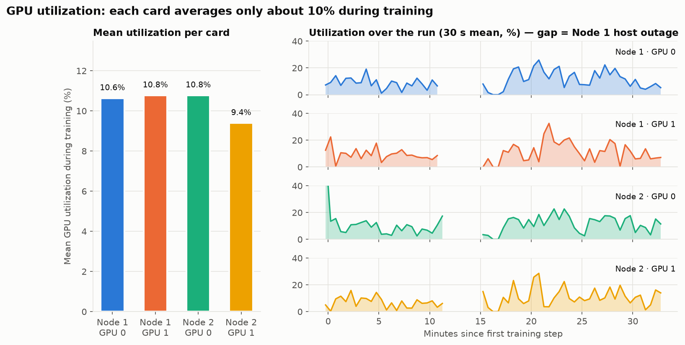
1 Node ใน LAB 4.3 ได้ util ~49% จากการผลัดกันทำ พอเพิ่มเวลารอเน็ต 78.5% เข้าไป การ์ดจึงทำงานเพียงราว 1 ใน 10 ของเวลา
MP 2 Node · Loss ลดต่อเนื่องตลอด 500 step แม้ผ่านการกู้คืนจาก checkpoint step 1502_model_parallel/results/metrics.json
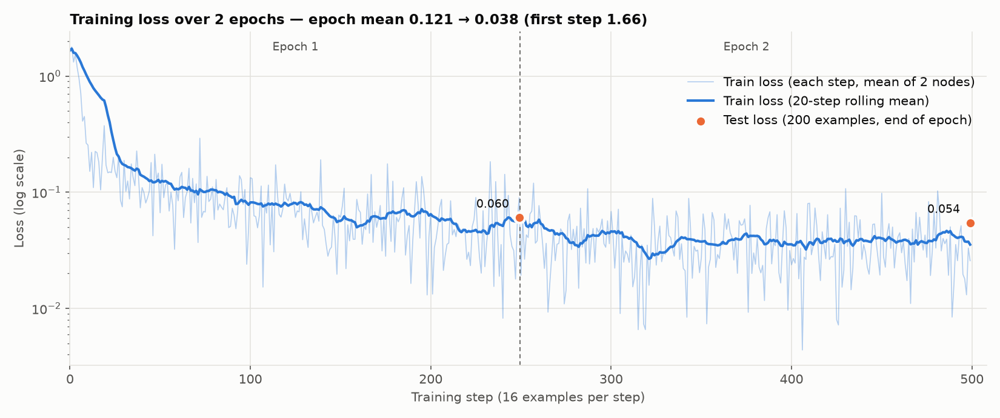
train loss ลดจาก 0.121 → 0.038 · test loss ลดจาก Base 1.915 เหลือ 0.0604 และ 0.0544 โดยไม่มีรอยสะดุดหลังรีสตาร์ต
MP 2 Node · Exact Match จบ Epoch 2 ที่ 74.0% ใกล้เคียง 1 Node (77.5%)2_model_parallel/results/summary.json
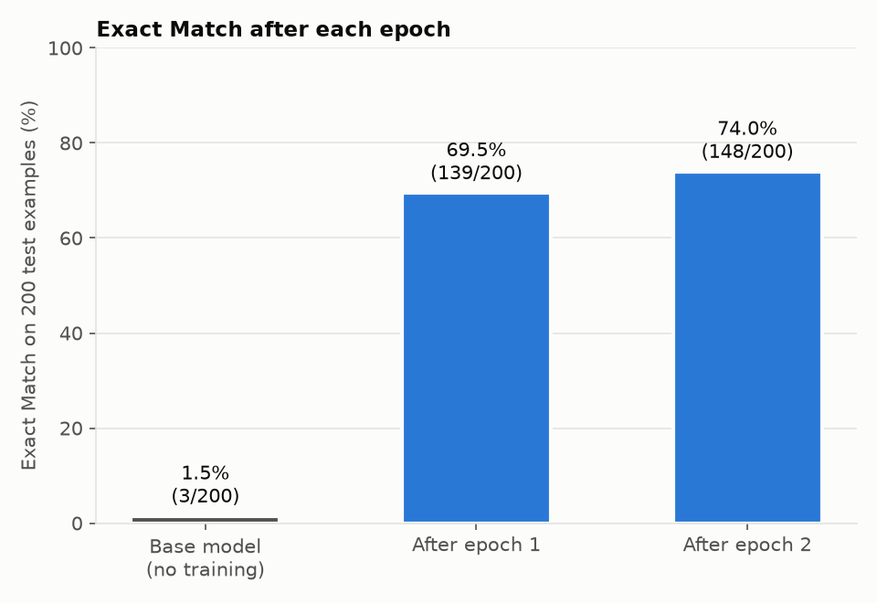
Base 1.5% (3/200) → Epoch 1: 69.5% (139/200) → Epoch 2: 74.0% (148/200) · ต่างจาก 1 Node เพียง 7 ข้อจาก 200
พรอมต์ · LAB 5.2 ขั้นที่ 3 · สรุปผลและลบเครื่องทั้ง 2 Node (ห้ามข้าม)Copy & Paste
[ที่ทำงาน]
container `multi-account` · โฟลเดอร์ /workspace/vastapp_lab · สกิล vastai
เครื่อง: ป้าย vapp-lab5-mp-1 (Node 1) และ vapp-lab5-mp-2 (Node 2) · กุญแจ SSH: /workspace/vastai_lab/Devtool_SSH/devtoolSSH
เก็บโค้ดและผลที่: lab5_cluster/2_model_parallel ของโฟลเดอร์ที่เปิด Claude Code อยู่ (ไม่ใช่ใน container)
[งาน]
สรุปผลเป็นกราฟ แล้วลบเครื่องทั้ง 2 Node
[ขั้นตอน]
1. นำผลดิบของทั้ง 2 Node กลับมาที่ results/raw
2. เขียน code/report.py รวมตัวเลขลง results/metrics.json พร้อมเงินต่อ 1,000 ตัวอย่าง (คิดจากราคาของ 2 เครื่องรวมกัน)
3. ให้สคริปต์วาดกราฟที่ results/images (ข้อความอังกฤษ): เวลาต่อ step แยกเวลาคำนวณกับเวลาส่งและรอ · GPU util ของแต่ละใบ · loss ตลอด 2 Epoch · Exact Match ของแต่ละ Epoch
4. ลบเครื่องป้าย vapp-lab5-mp-1 และ vapp-lab5-mp-2 แล้วตรวจว่าไม่เหลือ (ห้ามแตะเครื่องป้ายอื่น)
[รายงาน]
สรุปเป็นตาราง: ตัวอย่างต่อวินาที · สัดส่วนเวลาที่ใช้ส่งและรอ · Exact Match · เงินต่อ 1,000 ตัวอย่าง
ค่าใช้จ่ายจริงของแต่ละเครื่อง: อายุเครื่อง · ยอดที่ถูกคิด · ห้ามแสดงค่า keyขยาย MP จาก 2 Node เป็น 3 Node (3 โมเดล, 6 GPU): เพิ่ม Node เท่ากับเพิ่มชุดโมเดล
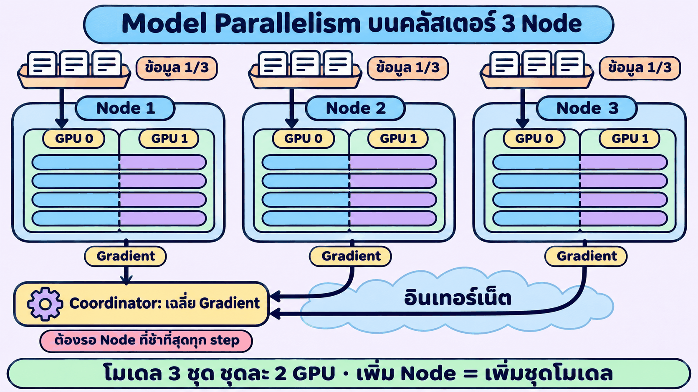
batch = 8 ต่อ Node ทำให้ batch รวม = 24 (167 step/Epoch)พรอมต์ · LAB 5.2 ขั้นที่ 4 · เช่า 3 Node เตรียมของ และวัดเน็ตCopy & Paste
[ที่ทำงาน]
container `multi-account` · โฟลเดอร์ /workspace/vastapp_lab · สกิล vastai
กุญแจ SSH: /workspace/vastai_lab/Devtool_SSH/devtoolSSH
เก็บโค้ดและผลที่: lab5_cluster/2_model_parallel/node3 ของโฟลเดอร์ที่เปิด Claude Code อยู่ (ไม่ใช่ใน container)
[งาน]
เช่าเครื่อง 3 เครื่อง (เรียกว่า Node 1 Node 2 และ Node 3) เครื่องละ GPU 2 ใบ แล้วเตรียมโมเดลกับ Dataset ให้ทั้ง 3 Node
[เครื่องที่ต้องการ]
จำนวน: 3 เครื่อง ที่มี IP สาธารณะต่างกัน · ป้าย vapp-lab5-3mp-1 vapp-lab5-3mp-2 และ vapp-lab5-3mp-3
GPU: RTX 3090 2 ใบในเครื่องเดียว · ราคาไม่เกิน $0.60 ต่อชั่วโมงต่อเครื่อง
เงื่อนไข: verified · reliability 0.95 ขึ้นไป · เน็ตดาวน์โหลด 700 Mbps ขึ้นไป · ค่าดาวน์โหลดไม่เกิน $0.01 ต่อ GB · CPU 16 cores ขึ้นไป · ไม่อยู่ในจีน
ระบบ: PyTorch 2.8 ที่มี CUDA 12.8 · disk 60 GB · Node 1 เปิด port ให้เครื่องอื่นต่อเข้ามาได้ 1 port
[ขั้นตอน]
1. เช่าเครื่องที่ถูกที่สุดตามเงื่อนไขทั้ง 3 เครื่อง โดยเลือกให้อยู่ใกล้กัน ถ้าเครื่องไหนเกิน 10 นาทียังไม่พร้อม ให้ลบแล้วเช่าเครื่องอื่น
2. โหลดโมเดล Qwen/Qwen3-8B และ Dataset b-mc2/sql-create-context ลงทั้ง 3 Node
3. สับ Dataset ด้วย seed 0 แล้วแบ่ง Training Set 4,000 ตัวอย่าง และ Test Set 200 ตัวอย่าง ให้ทั้ง 3 Node ได้ชุดเดียวกัน
4. ทำตารางตัวอย่าง 6 รายการ (คำถาม · โครงสร้างตาราง · SQL เฉลย) เก็บที่ results/dataset_samples.md
5. วัดเน็ตระหว่าง Node: Node 2 และ Node 3 ต่อเข้า port ของ Node 1 ได้หรือไม่ · เวลาไปกลับ (RTT) · ความเร็วส่งข้อมูลทั้งสองทิศ
ถ้า RTT ของ Node ใดเกิน 100 ms ให้ลบเครื่องนั้นแล้วเช่าเครื่องใหม่แทน แล้ววัดซ้ำ (เปลี่ยนได้ไม่เกิน 2 ครั้ง)
[รายงาน]
สรุปเป็นตาราง: เครื่องที่ได้ของแต่ละ Node · ราคาต่อชั่วโมง · เน็ตระหว่าง Node (RTT และความเร็ว) · จำนวนตัวอย่างของแต่ละชุด
อธิบายตัวอย่าง 1 รายการว่าแต่ละช่องคืออะไร · ห้ามแสดงค่า key · บอกว่าเครื่องยังเปิดอยู่ผลวัดเน็ต MP 3 Node (อาร์เจนตินา–ชิลี) 2 รอบ: RTT นิ่ง 29–36 ms แต่ความเร็วแกว่งหนักnode3/results/net_probe_run*.json
| เส้นทาง | RTT เฉลี่ย | ส่งไป Node 1 (รอบ 1 / รอบ 2) | รับจาก Node 1 (รอบ 1 / รอบ 2) |
|---|---|---|---|
| Node 2 ↔ Node 1 | 34–36 ms | 644 / 210 Mbps | 262 / 619 Mbps |
| Node 3 ↔ Node 1 | 29 ms | 82 / 306 Mbps | 198 / 148 Mbps |
พรอมต์ · LAB 5.2 ขั้นที่ 5 · เทรนแบบ Model Parallelism ข้าม 3 NodeCopy & Paste
[ที่ทำงาน]
container `multi-account` · โฟลเดอร์ /workspace/vastapp_lab · สกิล vastai
เครื่อง: ป้าย vapp-lab5-3mp-1 (Node 1) vapp-lab5-3mp-2 (Node 2) และ vapp-lab5-3mp-3 (Node 3) · กุญแจ SSH: /workspace/vastai_lab/Devtool_SSH/devtoolSSH
เก็บโค้ดและผลที่: lab5_cluster/2_model_parallel/node3 ของโฟลเดอร์ที่เปิด Claude Code อยู่ (ไม่ใช่ใน container)
[งาน]
เทรน Qwen3-8B ให้แปลงคำถามเป็น SQL แบบ Model Parallelism บนคลัสเตอร์ 3 Node
แนวคิด: แต่ละ Node ถือโมเดล 1 ชุด แบ่ง Layer ครึ่งแรกไว้ GPU 0 ครึ่งหลังไว้ GPU 1 · สาม Node แบ่งข้อมูลคนละ 1 ใน 3 · ทุก step ส่ง Gradient ของ LoRA ไปเฉลี่ยที่โปรแกรมกลางบน Node 1 แล้วทั้งสาม Node ปรับน้ำหนักด้วยค่าเฉลี่ยเดียวกัน
[ขั้นตอน]
1. เขียนโปรแกรมกลาง code/coordinator.py รันบน Node 1 เปิด port เดียว: รอ Gradient จากทุก Node ให้ครบ เฉลี่ย แล้วส่งค่าเฉลี่ยกลับ (Synchronous)
2. เขียนโปรแกรมเทรน code/worker.py เปิด 1 ตัวต่อ Node รวม 3 ตัว แต่ละตัวแบ่งโมเดลชุดเดียวลง GPU 2 ใบของ Node นั้น ต่อออกไปหาโปรแกรมกลาง และได้ข้อมูลคนละ 1 ใน 3 ไม่ซ้ำกัน
3. ลอง 3 step ด้วย batch ที่มีตัวอย่างยาวที่สุดปนกับตัวอย่างสั้น (มี padding เหมือนตอนเทรนจริง) ถ้า Out of Memory ให้แก้โค้ดให้ใช้หน่วยความจำน้อยลง โดยไม่เปลี่ยนค่าที่ตรึง
4. เทรน 2 Epoch และจับเวลาของทุก step แยกเป็น 2 ส่วน: เวลาคำนวณบน GPU และเวลาส่งกับรอ Gradient
5. เขียน code/eval.py วัด Exact Match บน Test Set ของโมเดลก่อนเทรน (Base) และหลังจบแต่ละ Epoch (ไม่นับ ; ท้ายคำสั่งเป็นข้อผิด)
6. หลังจบแต่ละ Epoch ตรวจว่าน้ำหนัก LoRA ของทั้ง 3 Node เท่ากัน
7. ให้งานรันต่อได้แม้การเชื่อมต่อหลุด และรายงานทุก 2–3 นาที
[ค่าที่ตรึง]
โมเดล: Qwen/Qwen3-8B แบบ bf16 · ปิด thinking · ไม่ใช้ Gradient Checkpointing
LoRA: r 8 · alpha 16 · ที่ q_proj กับ v_proj
การเทรน: learning rate 2e-4 · seed 0 · ข้อความยาวไม่เกิน 256 token · 2 Epoch
batch: 8 ต่อ Node (รวม 24) เท่ากับ batch ของ LAB 4.3 เพื่อเทียบกับผล 1 Node และ 2 Node ได้
[รายงาน]
สรุปเป็นตาราง: batch ต่อ Node และรวม · Layer ไหนอยู่ใบไหน · VRAM สูงสุดของแต่ละใบ · วินาทีต่อ step (แยกเวลาคำนวณ กับเวลาส่งและรอ) · ขนาด Gradient ที่ส่งต่อ step · ตัวอย่างต่อวินาที · GPU util ของแต่ละใบ · loss และ Exact Match ของ Base และหลังจบแต่ละ Epoch
บอกว่าเครื่องยังเปิดอยู่แยกเวลา ส่ง / รอ / รับ ราย Node ของ MP 3 Node: เห็นชัดว่าใครกำลังรอใครอยู่ตารางหลัก · node3/results/metrics.json
| Node 1 | Node 2 | Node 3 | |
|---|---|---|---|
| วินาทีต่อ step (เฉลี่ย) | 5.51 | 5.53 | 5.53 |
| คำนวณบน GPU | 0.77 | 0.70 | 0.72 |
| ส่งและรอ Gradient | 4.74 | 4.82 | 4.81 |
| – ส่ง / รอ / รับ | 0.01 / 4.69 / 0.02 | 0.49 / 2.63 / 1.68 | 1.26 / 0.83 / 2.69 |
| VRAM สูงสุด GPU 0 / GPU 1 (MiB) | 14,314 / 14,716 | 13,086 / 13,528 | 12,884 / 13,326 |
| GPU util เฉลี่ย GPU 0 / GPU 1 | 7.3% / 6.6% | 6.2% / 6.3% | 6.9% / 6.1% |
ผล MP 3 Node: ได้ 4.32 ตัวอย่าง/วิ (ช้ากว่า 2 Node) — ส่งและรอ 87%, GPU util 6.6%2_model_parallel/node3/results/summary.json
float32 เต็มทั้งสองขา (15.34 MB)float32 เต็มทั้งขาขึ้นและขาลง (ส่วน 2 Node ส่งขาขึ้น bf16) จึงเป็นส่วนหนึ่งที่ทำให้เวลาส่งและรอนานขึ้นเกือบ 2 เท่าMP 3 Node · 87% ของเวลาต่อ step คือการส่งและรอ และมีจังหวะเน็ตค้างทะลุ 60 วินาที2_model_parallel/node3/results/metrics.json
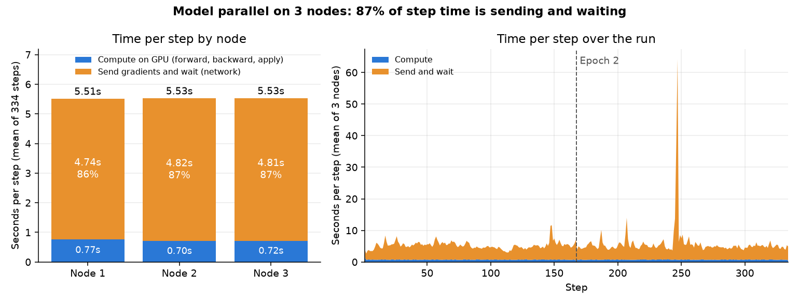
ด้านซ้าย: ทั้ง 3 Node เฉลี่ยเท่ากันเป๊ะ (5.51–5.53 วิ) เพราะ Synchronous · ด้านขวา: ช่วง step 250 เน็ตค้างเกิน 60 วิ
MP 3 Node · GPU ทั้ง 6 ใบเฉลี่ย 6.1–7.3% ตลอดการเทรน 30.9 นาที2_model_parallel/node3/results/train/
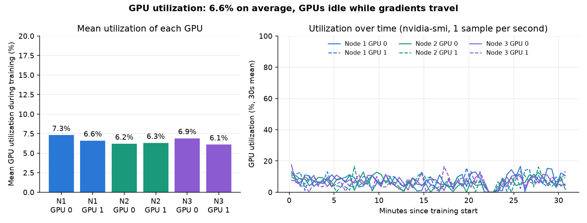
กราฟลักษณะเดียวกับ DP 3 Node คือ GPU ว่างราว 93% ของเวลา เพราะต้องรอการสื่อสารข้ามเครื่องแทบตลอดทุก step
MP 3 Node · Loss ลดลงต่อเนื่องตลอด 334 step โดยไม่หลุดการเชื่อมต่อเลย2_model_parallel/node3/results/metrics.json
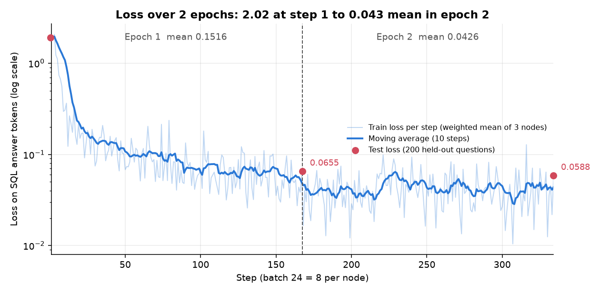
train loss ลดจาก 0.152 → 0.043 · test loss ลดจาก Base 1.915 เหลือ 0.066 และ 0.059 หลังจบ Epoch 1 และ 2
MP 3 Node · Exact Match จบ Epoch 2 ที่ 71.0% (ต่ำกว่า 2 Node 6 ข้อ จาก batch รวม 24)2_model_parallel/node3/results/summary.json
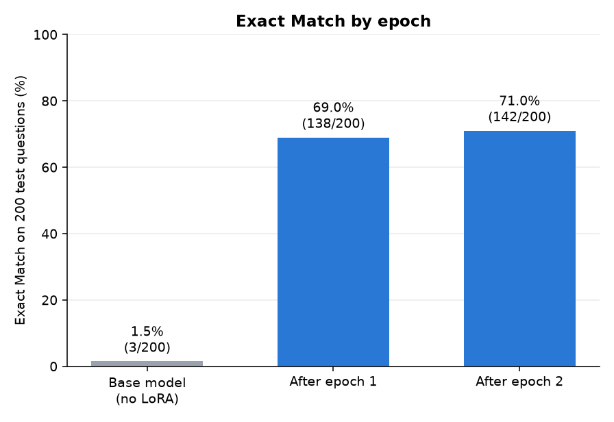
Base 1.5% → Epoch 1: 69.0% (test loss 0.066) → Epoch 2: 71.0% (test loss 0.059) · ปรับน้ำหนักเพียง 167 ครั้ง/Epoch · LoRA 3 Node ตรงกันทุกค่า
พรอมต์ · LAB 5.2 ขั้นที่ 6 · สรุปผลและลบเครื่องทั้ง 3 Node (ห้ามข้าม)Copy & Paste
[ที่ทำงาน]
container `multi-account` · โฟลเดอร์ /workspace/vastapp_lab · สกิล vastai
เครื่อง: ป้าย vapp-lab5-3mp-1 (Node 1) vapp-lab5-3mp-2 (Node 2) และ vapp-lab5-3mp-3 (Node 3) · กุญแจ SSH: /workspace/vastai_lab/Devtool_SSH/devtoolSSH
เก็บโค้ดและผลที่: lab5_cluster/2_model_parallel/node3 ของโฟลเดอร์ที่เปิด Claude Code อยู่ (ไม่ใช่ใน container)
[งาน]
สรุปผลเป็นกราฟ แล้วลบเครื่องทั้ง 3 Node
[ขั้นตอน]
1. นำผลดิบของทั้ง 3 Node กลับมาที่ results/raw
2. เขียน code/report.py รวมตัวเลขลง results/metrics.json พร้อมเงินต่อ 1,000 ตัวอย่าง (คิดจากราคาของ 3 เครื่องรวมกัน)
3. ให้สคริปต์วาดกราฟที่ results/images (ข้อความอังกฤษ): เวลาต่อ step แยกเวลาคำนวณกับเวลาส่งและรอ · GPU util ของแต่ละใบ · loss ตลอด 2 Epoch · Exact Match ของแต่ละ Epoch
4. ลบเครื่องป้าย vapp-lab5-3mp-1 vapp-lab5-3mp-2 และ vapp-lab5-3mp-3 แล้วตรวจว่าไม่เหลือ (ห้ามแตะเครื่องป้ายอื่น)
[รายงาน]
สรุปเป็นตาราง: ตัวอย่างต่อวินาที · สัดส่วนเวลาที่ใช้ส่งและรอ · Exact Match · เงินต่อ 1,000 ตัวอย่าง
ค่าใช้จ่ายจริงของแต่ละเครื่อง: อายุเครื่อง · ยอดที่ถูกคิด · ห้ามแสดงค่า keyสรุป LAB 5.2 (Model Parallelism): เพิ่มเครื่องแล้วช้าลงราวครึ่งหนึ่ง แต่ยังได้ข้อดีเรื่อง VRAMตารางหลัก · LAB 5.2
| 1 Node (LAB 4.3) | 2 Node | 3 Node | |
|---|---|---|---|
| GPU ทั้งหมด / จำนวนโมเดล | 2 / 1 | 4 / 2 | 6 / 3 |
| ทางที่ Gradient เดินทาง | ไม่ต้องส่งข้ามเครื่อง | อินเทอร์เน็ต · RTT 30 ms · ราว 82–93 Mbps | อินเทอร์เน็ต · RTT 29–36 ms · 82–644 Mbps (แกว่ง) |
| batch ต่อ Node / รวม | 8 / 8 | 8 / 16 | 8 / 24 |
| วินาทีต่อ step | 0.79 | 3.27 | 5.52 |
| – คำนวณ | 0.79 | 0.70 | 0.73 |
| – ส่งและรอ | – | 2.56 (78.5%) | 4.79 (87%) |
| ตัวอย่างต่อวินาที | 10.13 | 4.90 | 4.32 |
| Speedup เทียบ 1 Node | 1.00 | 0.48 | 0.43 |
| Efficiency | 100% | 24% | 14% |
| GPU util เฉลี่ย | 46.5% / 51.8% | ราว 10% | 6–7% |
| Exact Match หลัง Epoch 1 → 2 | 70.0% → 77.5% | 69.5% → 74.0% | 69.0% → 71.0% |
เทียบ 1 Node · 2 Node · 3 Node ทั้งสองแบบ และเมื่อไรควรใช้คลัสเตอร์
นำผลจริงของ LAB 5.1 (Data Parallelism) และ LAB 5.2 (Model Parallelism) มาวางคู่กัน สรุปบทเรียนหน้างาน และแนวทางตัดสินใจก่อนขยายเครื่อง
ผลรวมทั้ง 2 LAB ในภาพเดียว: เพิ่มเครื่องผ่านอินเทอร์เน็ตแล้วช้าลงทั้ง DP และ MPสรุปผลจริง LAB 5
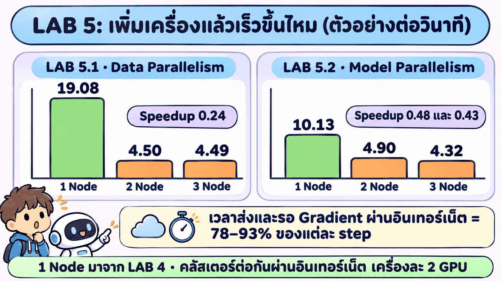
DP ลดจาก 19.08 → 4.50 / 4.49 ตัวอย่าง/วิ (Speedup 0.24) · MP ลดจาก 10.13 → 4.90 / 4.32 ตัวอย่าง/วิ (Speedup 0.48 / 0.43) เพราะส่งและรอกิน 78–93%
ตารางสรุปตัวเลขวัดจริงทั้ง 6 กรณี: เทียบ 1, 2 และ 3 Node ของทั้ง DP และ MPตารางหลัก · 6 กรณี
| Data Parallelism | Model Parallelism | |||||
|---|---|---|---|---|---|---|
| 1 Node | 2 Node | 3 Node | 1 Node | 2 Node | 3 Node | |
| GPU ทั้งหมด / จำนวนโมเดล | 2 / 2 | 4 / 4 | 6 / 6 | 2 / 1 | 4 / 2 | 6 / 3 |
| batch รวม | 8 | 16 | 24 | 8 | 16 | 24 |
| วินาทีต่อ step | 0.42 | 3.56 | 5.34 | 0.79 | 3.27 | 5.52 |
| – คำนวณ | – | 0.43 | 0.36 | 0.79 | 0.70 | 0.73 |
| – ส่งและรอ Gradient | สั้นมาก | 3.11 (88%) | 4.97 (93%) | – | 2.56 (78.5%) | 4.79 (87%) |
| ตัวอย่างต่อวินาที | 19.08 | 4.50 | 4.49 | 10.13 | 4.90 | 4.32 |
| Speedup เทียบ 1 Node | 1.00 | 0.24 | 0.24 | 1.00 | 0.48 | 0.43 |
| Efficiency | 100% | 12% | 8% | 100% | 24% | 14% |
| GPU util เฉลี่ย | ราว 98% | 12.7% | 6.6% | ราว 49% | ราว 10% | 6.6% |
| Exact Match หลัง Epoch 2 | 77.5% | 75.0% | 74.5% | 77.5% | 74.0% | 71.0% |
คอขวดคืออินเทอร์เน็ต ไม่ใช่ GPU: เมื่อเน็ตช้ากว่าคำนวณ 4–14 เท่า วิธีจัดวางในเครื่องแทบไม่ต่างกันวิเคราะห์คอขวดเครือข่าย
ด้านความถูกต้อง: การเฉลี่ย Gradient ข้ามเครื่องทำงานถูกทุกชุด น้ำหนัก LoRA ตรงกัน 100%สรุปด้านคุณภาพโมเดล
5 ปัญหาจริงที่เจอระหว่างทำ LAB 5 และบทเรียนที่ต้องนำไปใช้กับงานคลัสเตอร์ตารางหลัก · บทเรียนหน้างาน
| เรื่อง | เกิดที่ | บทเรียน |
|---|---|---|
| ความเร็วระหว่างเครื่องต่ำกว่าที่หน้าเช่าบอกมาก (82–143 Mbps เทียบกับที่กรองไว้ 700 Mbps) | ทั้งสอง LAB ย่อย | ต้องวัดเน็ตระหว่าง Node เองก่อนเทรน |
| ความเร็วเน็ตแกว่ง บาง step ค้างเป็นสิบถึงร้อยวินาที | ทุกรอบ | ดูค่ากลางคู่กับค่าเฉลี่ย · ต้องมีการต่อใหม่และรันต่อจาก checkpoint |
| AI ตั้งขนาด buffer ของ socket เอง ทำให้ช้า 16–70 วินาทีต่อ step | 3 Node ทั้งสอง LAB ย่อย | การตั้งค่าเครือข่ายเล็กน้อยเปลี่ยนความเร็วได้หลายเท่า |
| เครื่องเช่า reboot เองกลางการเทรน | LAB 5.2 ส่วน 2 Node | ยิ่งมากเครื่อง ยิ่งมีโอกาสที่เครื่องใดเครื่องหนึ่งจะมีปัญหา |
| batch ที่ตรึงไว้ Out of Memory ตอนลอง 3 step | LAB 5.1 ส่วน 2 Node | ลองด้วย batch ที่มี padding ก่อนเทรนจริงเสมอ |
ก่อนเพิ่มเครื่องให้ถาม 3 ข้อ และวัดความเร็วเน็ตเทียบเวลาคำนวณเสมอแนวทางตัดสินใจ
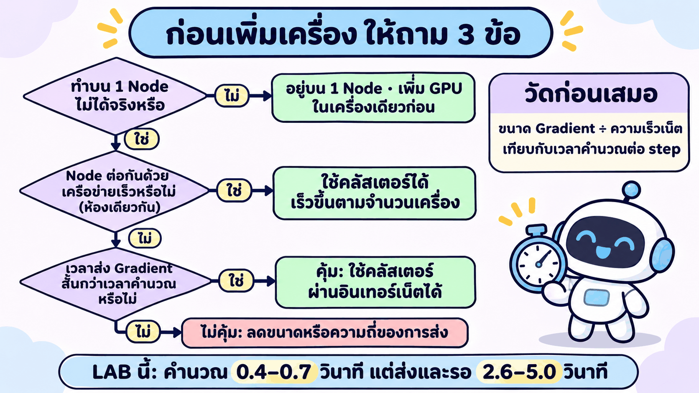
เริ่มที่ 1 Node ก่อนเสมอ → ถ้าไม่พอให้ดูว่า Node อยู่ใน เครือข่ายเร็วเดียวกันไหม → ถ้าผ่านอินเทอร์เน็ตต้องคำนวณ ขนาด Gradient ÷ ความเร็วเน็ต เทียบเวลาคำนวณ
สรุป 4 สถานการณ์: เมื่อไรควรอยู่บน 1 Node เมื่อไรใช้คลัสเตอร์ และต้องปรับอะไรถ้าจำเป็นต้องผ่านเน็ตตารางหลัก · การเลือกใช้
| สถานการณ์ | ควรทำ | เหตุผล |
|---|---|---|
| งานเทรนบน 1 Node ได้ | อยู่บน 1 Node · อยากเร็วขึ้นให้เพิ่ม GPU ในเครื่องเดียว | ใน LAB 4 Data Parallelism 4 ใบในเครื่องเดียวเร็วกว่า 2 ใบ 1.87 เท่า |
| GPU ในเครื่องเดียวไม่พอ และ Node อยู่ในเครือข่ายเร็วเดียวกัน | ใช้คลัสเตอร์ | เวลาส่ง Gradient สั้นเมื่อเทียบกับเวลาคำนวณ |
| มีแต่ Node ที่ต่อกันผ่านอินเทอร์เน็ต | วัดก่อน: ขนาด Gradient ÷ ความเร็วเน็ต เทียบกับเวลาคำนวณต่อ step | ถ้าเวลาส่งนานกว่าเวลาคำนวณ เพิ่มเครื่องแล้วช้าลงและแพงขึ้น (ผลของ LAB นี้) |
| ต้องใช้ผ่านอินเทอร์เน็ตจริง ๆ | ส่งให้เล็กลง (เช่น แปลง Gradient เป็น bf16) หรือส่งให้ห่างขึ้น (เฉลี่ยทุกหลาย step) | ลดเวลาส่งและรอต่อ step |
bf16) หรือ ส่งให้ห่างขึ้น (Gradient Accumulation / เฉลี่ยทุกหลาย step)ข้อจำกัดที่ต้องรู้เมื่ออ่านตัวเลขเทียบข้ามรอบใน LAB 5
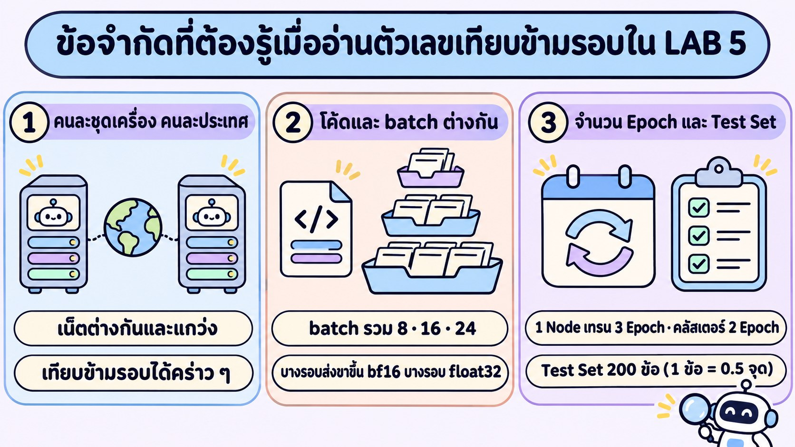
bf16 บางรอบ float32) และ batch รวมต่างกัน (8, 16, 24)ขนาด Gradient ÷ ความเร็วเน็ต เช็กก่อนเทรนทุกครั้ง และเลือกวิธีจัดวางให้ตรงคอขวด